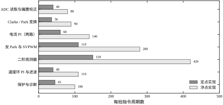
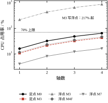
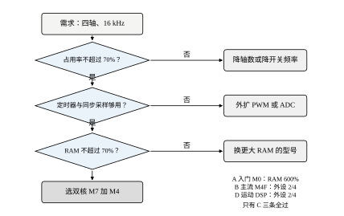
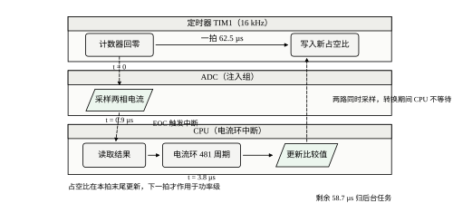
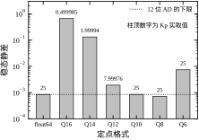
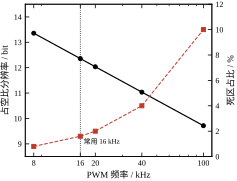
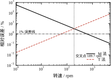
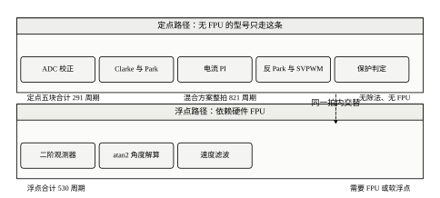
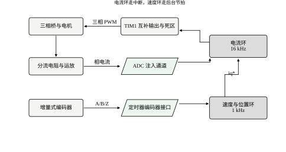
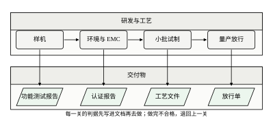

控制算法写在纸上时只有几行公式，落到机器上却要占几百个指令周期、几个定时器通道和几十千字节内存。芯片不会因为公式漂亮就多给一个周期。本章讨论的就是这层落差：一颗成本几元到几十元的微控制器，凭什么能在一个开关周期内完成采样、变换、闭环、调制与保护；当这些工作装不下时，该砍哪里、换什么。
本章不重推控制律（PID 见第 44、106 章，预测控制见第 58、80 章），也不重推任务调度（第 86 章已把时间盒子讲透）。它盯住的是处理器与外设本身的资源：周期够不够、位宽够不够、外设路数够不够。
现象一：满速时电机突然反转。 某风机驱动在额定转速以下运行正常，一旦超过 90% 额定转速，电机偶尔抽搐一下，示波器上相电流出现一个宽度约 2 ms 的反向脉冲。原因是反电动势观测器的输出在高速段超过了标幺值的 1.0，而实现用的是 Q15 格式，最大只能表示 0.99997。溢出后符号位翻转，观测值从正的最大跳到负的最大，控制器以为转速反向，立刻给出反向转矩。
现象二：低速爬行。 某转台在 5 r/min 以下出现一格一格的爬行，每格约 0.036°，正好是一个编码器计数。位置环用 12 位 ADC 采电位器做粗定位、编码器做精定位，编码器 2500 线四倍频，一转 10000 个计数。5 r/min 时一秒只有 833 个计数，而速度环的测速窗口取 1 ms，窗口内平均只有 0.83 个计数。M 法数不出小数，一个计数就代表 60 r/min，于是速度反馈在 0 与 60 r/min 之间来回跳，相对误差超过 100%。反馈一跳，电流给定就跳，转矩脉动推动转台一格一格地走。
现象三：电流波形上有毛刺。 某伺服在 16 kHz 开关频率下，相电流波形每周期都带一个尖峰。查了三遍硬件，最后发现 ADC 的采样触发点设在计数器回零处，正好落在下桥臂开通的开关瞬间。把触发点改到计数器峰值（中心对齐的中间点），尖峰消失，电流环带宽反而可以提高。
三个现象的共性：算法没错，资源与时刻错了。第一个是量程不够，第二个是分辨率不够，第三个是采样时刻不对。它们都不会在仿真里出现，因为仿真里的数没有位宽，采样也不需要时间。
把三个现象折算成代价，量级差别很大。溢出反转最凶险：它把“转得快”误判成“在倒转”，控制器按满反向转矩动作，机械上可能打坏联轴器，电气上可能触发过流保护而停机。低速爬行最烦人：它不是故障，指标上只表现为“低速平稳性差”，但用户一眼就看得见，而且往往在验收演示时才暴露。采样毛刺最隐蔽：它只抬高电流纹波与噪声，不影响平均值，常常等到 EMC 测试或温升超标时才被追出来。
三种现象也对应三条不同的排查入口。溢出要查变量的动态范围：把最坏工况下的物理量算出来，和所选 Q 格式的量程比一比，看哪个先到顶。爬行要查反馈的分辨率：把测速窗口内的计数个数算出来，小于 10 个就必然抖。毛刺要查时序：把采样触发点、死区插入时刻、桥臂开关沿三者在同一张时间轴上画出来，看有没有重叠。这三条入口分别对应 §87.2.2、§87.2.5 与 §87.7.4，本章后面会逐一给出算式。
还有一类更隐蔽的问题，三个现象都没有覆盖：算得完但算得太慢。代码在实验室空载时占用率只有 30%，一上负载、通信任务一开、日志一写，最坏响应翻倍，某一拍算不完，下一个周期直接用旧输出。这类问题不会让波形立刻变坏，而是让闭环的相位裕度悄悄掉十几度。它属于第 86 章的时间盒问题，本章只在占用率里留出余量，不重复讨论。
嵌入式控制器的选型与实现，本质上是在三个约束下做分配。
算力。一个开关周期内可用的指令周期数是 f_{\rm clk}/f_{\rm sw}。168 MHz 主频配 16 kHz 开关频率，每拍 10500 个周期；48 MHz 配同样的开关频率，每拍只有 3000 个周期。这两个数字决定了同一套代码能带几轴、能跑多复杂的观测器。
把这笔账算完，才看得清余量在哪里。以 M4F 为例，481 周期乘 4 轴乘 16 kHz，等于每秒 3078 万个周期，占 168 MHz 的 18.3%。这是“净计算占用率”，不含中断开销。一次中断进出要压栈 8 个寄存器、出栈恢复、再叠上流水线冲刷，在 Cortex-M4 上按 60 周期估是稳妥的。四轴共用一个定时器触发时只进一次中断，60 周期摊到四轴是每轴 15 周期；若每轴各配一个中断源，就要摊四次、共 240 周期。这就是“多轴共用一个时基”在周期账上更划算的原因，也是它唯一的优点——代价是四轴被绑在同一拍上，一轴出问题四轴一起停。
外设。定时器要能输出三对互补 PWM 并带可编程死区；ADC 要能由定时器触发、两相或多相同步采样；编码器要有正交解码接口。这些不是“有就行”，而是路数与通道数要对得上轴数。
外设的账常被算错，因为“通道数”有三种口径。第一种是引脚数，数起来最直观，却最不可靠，因为引脚可以重映射。第二种是定时器通道数，一个高级定时器有 3 个互补通道，正好带一轴，四轴就要 4 个高级定时器，而多数入门芯片只有 1 到 2 个。第三种是 ADC 的同步采样能力：两轴各要两相电流，共 4 路，必须能由同一个触发沿同时启动，否则两轴的采样时刻差出几百纳秒，在高速下就是几度的角度误差。第三种口径最容易被漏掉，也最难补——软件无法把不同步的采样变同步。
内存。查表法要 Flash，缓冲区与栈要 RAM。一张 256 项的单精度正弦表占 1 KB，多轴可以共用；真正吃 RAM 的是采样缓冲、参数副本与栈，四轴加后台任务合计很容易超过 4 KB，而入门级芯片的总 RAM 只有 8 KB。
Flash 与 RAM 还要分开算。正弦表、参数默认值、故障码表放 Flash，占的是代码空间，通常几十到上百 KB，一般够用；而采样缓冲区、栈、浮点运算的中间变量占 RAM，才是瓶颈。一次 ADC 双缓冲要两倍采样深度的空间，四轴、三相、每相 16 个点、单精度，就是 4\times3\times16\times2\times4=1536 字节，占 8 KB 的近两成。再留 2 KB 栈给中断嵌套，余量已经很薄。这三个约束里，算力最容易被高估，外设最容易被忽略，内存最容易被最后一刻发现不够。
把单轴磁场定向控制的一拍拆成七块，逐块数指令周期，得到表 87-1。定点实现合计 481 周期，浮点实现合计 1220 周期，比值 2.54。这个比值不是常数，但量级稳定：定点靠移位与乘加，浮点靠 FPU 的单周期乘加，两者差距通常在 2 到 4 倍之间。
| 计算块 | 定点/周期 | 浮点/周期 | 占比（浮点） |
|---|---|---|---|
| ADC 读取与偏置校正 | 40 | 80 | 6.6% |
| Clarke 与 Park 变换 | 36 | 90 | 7.4% |
| 电流 PI（两路） | 60 | 140 | 11.5% |
| 反 Park 与 SVPWM | 110 | 280 | 23.0% |
| 二阶观测器 | 150 | 420 | 34.4% |
| 速度环 PI 与滤波 | 40 | 110 | 9.0% |
| 保护与诊断 | 45 | 100 | 8.2% |
| 合计 | 481 | 1220 | 100% |
表 87-1 的单拍预算把“控制算法”还原成了一串整数。图的横轴是周期数，同一块用深浅两色对比两种实现；观测器与 SVPWM 两块加起来占了浮点预算的 57%，它们也是后面优化的首选对象。

表 87-1 有一个容易看漏的地方：保护与诊断只占 8.2%，但它必须每拍都跑。一旦为了省周期把它挪到后台，故障检测的最坏响应就从一拍变成一个后台周期，安全等级随之下降。省周期的顺序不能只看占比。
七块的周期数不是凭感觉分的，每一块都能拆到指令级。SVPWM 占 280 周期，因为它要做扇区判断（三次比较）、三个作用时间的除法与饱和、六路比较寄存器的写入；M4F 的浮点除法约 14 周期，三次就是 42 周期，占这一块的一成半。观测器占 420 周期，因为它是二阶的：两次状态更新、一次输出修正、一组增益乘法，且全部是浮点，没有任何可以换成移位的机会。ADC 读取只占 80 周期，是因为它只做搬运、去偏置和一次标度变换，真正耗时的采样在硬件里，不占 CPU。这也说明一件事：周期预算里最贵的不是“采样”，而是“算”，所以优化应该从算法降阶入手，而不是从驱动入手。
定点合计 481 与浮点合计 1220 的比值是 2.54，比“软浮点对硬件 FPU”的 8 倍小得多。原因是这七块里，SVPWM 与观测器的定点化并不省那么多——它们主要是乘加，在没有 FPU 的芯片上定点乘加是 1 个周期，在有 FPU 的芯片上浮点乘加也是 1 个周期，差距只来自额外的移位与饱和。8 倍这个数字只适用于“没有 FPU、靠软件库模拟浮点”的情形，也就是表 87-2 里 M3 那一行。
第一，一颗芯片最多能带几轴。答案是算力除以单轴预算，再留 30% 余量。第二，用定点还是浮点。答案取决于芯片有没有 FPU，以及被控量的动态范围。第三，外设怎么配。PWM 频率、ADC 位数、编码器线数三者互相牵制，没有单独最优。第四，算不过来时先砍哪一块。答案与“哪一块占周期最多”不完全一致。第五，什么时候必须换芯片。答案是一条边界，跨过去以后优化只能把问题推迟一个版本。
五个问题都要求一个数，而不是一段评价。第一个问的是 n_{\max}，本章的答案是 M0 配定点 4.4 轴、M4F 配浮点 6.0 轴、M7 配浮点 17.2 轴。第二个问的是“Kp=25 装不装得下”，答案是 Q12 及以上都装不下，只能用 Q10 或更粗。第三个问的是“16 kHz 还是 20 kHz”，答案是 16 kHz 下 ARR 5250、分辨率 12.36 位、死区占 1.6%，20 kHz 下升到 12.04 位与 2.0%，两者都可用，40 kHz 就只剩 11.04 位与 4.0%，开始吃紧。第四个问的是“先砍观测器还是先砍保护”，答案是都不砍，先降观测器阶数、再把速度环挪到 1 kHz 子节拍。第五个问的是“什么信号出现就该换平台”，答案是四条，写在 §87.11.7。
把这五个问题的答案摆在一起，会发现它们互相锁死。想提高 PWM 频率改善电流纹波，就要牺牲分辨率、抬高占用率；想提高分辨率，就要降 PWM 频率，环宽又不够；想多带轴，就要砍观测器，低速性能又变差。所谓“选型”，本质是在这组互相锁死的约束里找一个可行点，然后接受它的短板，而不是找一个没有短板的芯片。
本章反复用同一组数字：16 kHz 开关频率、168 MHz 主频、四轴、12 位 ADC、2500 线编码器。每次讨论一个资源，就把这组数字代入，看它先撞哪一堵墙。这样做的好处是结论可核对；代价是结论只在这组数字附近成立，换一个量级要重算。§87.3 给出的步骤就是“重算”的流程。
这组数字之间不是随便凑的，它们满足三条隐式关系。f_{\rm clk}/f_{\rm sw}=10500，是单轴预算 481 的 21.8 倍，即理论上最多带 21.8 轴——实际只能带 6 轴，因为 70% 上限与浮点开销吃掉了大部分余量。f_{\rm sw}/f_{\rm 速度环}=16，速度环每 16 拍跑一次，这个比值决定了速度环能取多高的带宽。N_e f_{\rm sw} 与编码器计数率的比值决定了测速窗口能取多短，本章取 1 ms，正好是一个速度环周期。
换一组数字时，只有两条结论是尺度无关的。第一条是式 (87-4)：静差由最粗的一级量化决定，与增益无关，这条对任何位宽都成立。第二条是式 (87-17) 与 (87-18) 给出的可行窗口：量程与分辨率同时约束时，Q 格式的可选档位只有一到两档，这条对任何被控量都成立。其余结论——具体几轴、具体多少度相位、具体几个周期——都要重算。
嵌入式的数学大多是一阶的：除法、取整、对数。难的不是公式本身，而是把物理量折算成整数时丢掉的那部分，以及丢掉之后如何反作用于闭环。
设单轴一拍需要 N 个指令周期，主频 f_{\rm clk}，开关频率 f_{\rm sw}，带 n 轴，则 CPU 占用率为
U=\frac{N\,n\,f_{\rm sw}}{f_{\rm clk}} \tag{87-1}
反过来，给定占用率上限 U_{\max}，最大轴数是
n_{\max}=\frac{U_{\max}f_{\rm clk}}{N f_{\rm sw}} \tag{87-2}
式 (87-1) 里三个量都可测：N 用定时器计数或 GPIO 翻转加示波器测，f_{\rm clk} 查手册，f_{\rm sw} 是设计值。唯一容易出错的是 N 的口径——它必须是最坏路径的周期数，不是平均值。中断入口、现场保护、分支预测失败、Flash 等待周期都要算进去。
式 (87-1) 是线性的，前提是“每轴一拍的工作量不随轴数变化”。这个前提在磁场定向控制上成立：四轴各自采样、各自变换、各自闭环，轴与轴之间只共享时基。一旦出现跨轴耦合——双轴联动的插补、龙门同步的交叉耦合项、多轴协同的轨迹前瞻——线性关系就断了，必须按最坏的那一轴重算，而且耦合项本身还要额外加几十个周期。工程上判断能不能用式 (87-1)，只问一句：拆掉三轴、只留一轴，剩下那一轴的代码会不会变。
占用率上限取 70%，这个数的来历值得说清。剩下 30% 不是保险系数，是给“不归控制管”的事情留的位置：通信任务要在两拍之间收发报文，日志要写环形缓冲，参数要在停机时存 Flash，而 Flash 擦除一页在 72 MHz 上会停顿 20 到 40 ms，期间 CPU 取指全部等待。若参数存储放在控制中断里做，那一拍就直接丢了。此外还有中断抖动、温升降频、以及调试器挂上时额外的几十个周期。把余量按 30% 留，是因为这些杂项在实测中通常吃掉 10% 到 25%，留 30% 才有拒绝新需求的底气。
测 N 本身也有陷阱。最直接的办法是在中断入口翻转一个 GPIO、在出口再翻一次，用示波器读脉宽；更细的办法是用内核的周期计数器（Cortex-M3 以上都有 DWT），直接读出进入与退出的差值。两种办法测到的都是“这一拍实际花了多少”，而不是“最坏能花多少”。要拿最坏值，得把分支都走一遍——例如让观测器进饱和分支、让保护进故障分支、让除法遇到极小的分母。带 cache 的芯片（M7）还要额外注意：命中与不命中的取指差出好几倍，实验室里跑得欢的代码，换一段数据就可能超时。
表 87-2 把四款典型芯片代入式 (87-1)，开关频率统一取 16 kHz。浮点实现只在有硬件 FPU 的型号上成立；M3 没有 FPU，写浮点要交给软件库，单精度乘法的耗时约为硬件实现的 8 倍。
| 实现 | 芯片 | 1 轴 | 2 轴 | 4 轴 | 70% 上限轴数 |
|---|---|---|---|---|---|
| 定点 | M0 @48 MHz | 16.0% | 32.1% | 64.1% | 4.4 |
| 定点 | M3 @72 MHz | 10.7% | 21.4% | 42.8% | 6.5 |
| 浮点 | M3 @72 MHz | 216.9% | 433.8% | 867.6% | 0.3 |
| 浮点 | M4F @168 MHz | 11.6% | 23.2% | 46.5% | 6.0 |
| 浮点 | M7 @480 MHz | 4.1% | 8.1% | 16.3% | 17.2 |
表 87-2 最刺眼的一行是 M3 写浮点：单轴就要 217%，连一拍都跑不完。这不是说 M3 不能做 FOC，而是说 M3 必须写定点。同一颗芯片，换一种数值表示，占用率从 10.7% 涨到 216.9%，相差 20 倍。选型时把“有没有 FPU”当成一个勾选项，往往就是从这里开始出错的。
16 位有符号定点数用 Qn 表示，其中 n 是小数位数，整数部分占 15-n 位。可表示的范围与分辨率分别是
|x|\le 2^{15-n}-2^{-n},\qquad q=2^{-n} \tag{87-3}
表 87-3 列出本章用到的几档格式。位宽每减 2 位，量程扩大 4 倍，分辨率降低 4 倍。这是一条硬 trade-off，没有第三种选择。
| 格式 | 量程 | 分辨率 | 能表示 Kp=25 | 典型用途 |
|---|---|---|---|---|
| Q16 | ±0.500 | 1.53\times10^{-5} | 否 | 归一化正弦表 |
| Q14 | ±2.000 | 6.10\times10^{-5} | 否 | 标幺化电流 |
| Q12 | ±8.000 | 2.44\times10^{-4} | 否 | 标幺化电压 |
| Q10 | ±32.00 | 9.77\times10^{-4} | 是 | 增益与给定 |
| Q8 | ±128.0 | 3.91\times10^{-3} | 是 | 位置计数 |
| Q6 | ±512.0 | 1.56\times10^{-2} | 是 | 转速累积 |
表 87-3 的第四列是本章最实用的一栏。Kp 取 25 时，Q16、Q14、Q12 都装不下，只能截断到量程上限。截断不是报错，是静默饱和：代码照常运行，增益却变成了 0.5、2、8。§87.6 会看到，这三种情况的静差分别是 66%、13% 和 0.19%，而工程师在示波器上看到的只是“响应有点慢”。
定点乘法的细节决定了误差的另一半。两个 Qn 数相乘，结果是 Q2n 的 32 位数；要变回 Qn，必须右移 n 位并处理高低字。这里有两个容易忽略的点。第一个是舍入：直接右移等于向负无穷取整，每做一次就给结果注入 -q/2 的直流偏置，一拍做二十次乘法，偏置就累积成可见的静差；标准做法是先加半个 LSB 再右移，即 (a\cdot b+2^{n-1})\gg n。第二个是饱和：中间结果必须用 32 位累加，最后一步再用饱和指令（Cortex-M 的 SSAT）压回 16 位，否则一旦超过 ±1.0，又是现象一那种符号翻转。
还有一个细节是“标幺化的时机”。同一个物理量在不同环节的量纲不同：电流是安培，电压是伏特，转速是 r/min，而 Q 格式只认标幺值。做法是在入口处一次性折算成 ±1 的标幺量，之后全链路都用标幺，只有在输出给 PWM 比较寄存器时才乘回量程。这样做的代价是要维护一张“基准表”（每安培对应多少标幺、每伏对应多少），好处是全链路的位数需求一致，不必为每个变量单独选 Q 格式。本章后续说“Q10”时，指的就是这条统一标幺链路。定标一旦被某个环节偷偷改掉（例如把电流基准从 10 A 改成 20 A），现象就是“增益突然减半”，而代码一个字都没动。
设误差 e 被量化到步长 q 的格点上。当 |e|<q/2 时，量化结果为 0，控制器输出为 0，被控对象停住不动。因此纯比例结构下的稳态偏差满足
|\delta|\le \frac{q}{2}=\frac{2^{-n}}{2} \tag{87-4}
式 (87-4) 有一个反直觉的推论：静差与增益 K_p 无关。增益只决定进入死区的快慢，不决定死区有多宽。想让静差变小，只有两条路——提高位宽，或者加积分。加积分会把静差压到 q/(2K_p) 以下，代价是把死区变成极限环：积分器在每个量化格上积累，越过半格后输出跳变，位置来回蹭。
§87.6 的仿真给出的数字与式 (87-4) 对得上：Q6 的 q/2=7.81\times10^{-3}，实测静差 7.38\times10^{-3}；Q8 的理论值 1.95\times10^{-3}，实测 7.15\times10^{-4}，被 12 位 ADC 的量化盖住了。
这个推导有一个容易漏掉的前提：被控对象在死区内必须“停得住”。若对象本身有积分性质（位置由速度积分而来，速度由转矩积分而来），那么死区不是“停住”，而是“误差缓慢累积到越过半格为止”，此时静差的上界仍是 q/2，但表现形式变成低频的、周期很长的爬行。这就是现象二的微观机制：误差每越过半格，控制器动一下，台面挪一格，再攒下一格。
加积分之后的静差与极限环，可以写得更具体。积分器在每个采样周期累加 K_i eT，只有当累计值超过半个输出 LSB 时，输出才真正变化。设输出步长为 q_u，则一个极限环周期内，误差要走过 q_u/K_i T 个采样点，摆幅约为 q/2。于是极限环的周期是 T\cdot q_u/(K_i T e_{\rm lp})，随 K_i 减小而变长、随 q_u 减小而变短。工程上的含义很直接：想压住极限环，要么减小输出量化步长（提高 PWM 分辨率），要么降低积分增益（牺牲响应），没有第三条路。扰动信号（dither）是第三条半——在输出上叠一个峰峰值等于一个 LSB 的伪随机抖动，把量化器的确定性死区变成统计意义上的白噪声，代价是纹波变大一点，收益是消除低频爬行。
ADC 的量化步长由量程与位数决定：
q_{\rm adc}=\frac{V_{\rm FS}}{2^{b}} \tag{87-5}
本章的位置量程取 \pm2（标幺），12 位对应的步长是 9.77\times10^{-4}。这个数直接决定位置反馈的最小可分辨增量，也决定了式 (87-4) 中静差的下限。位数再高，静差也不会低于 AD 的半步。
换成工程单位更直观。3.3 V 参考、12 位差分，一个 LSB 是 3.3/4096=0.806 mV。电流采样用 10 mΩ 分流电阻加 20 倍增益，每安培对应 0.2 V，于是 1 个 LSB 等于 4.0 mA；若额定电流 5 A，量化分辨率是额定的 0.08%。10 位时 LSB 变成 16 mA、0.32%，12 位时降到 4 mA，14 位时 1 mA 却已经低于运放失调与开关噪声的底噪，再高的位数买不到精度。表 87-9 的仿真正是这个结论：8 位时静差 6.5\times10^{-3}，10 位时 7.1\times10^{-4}，12 位以上稳定在 8.1 到 8.5\times10^{-4}，不再改善。
这也解释了“位宽到某一点以后就没用了”的门槛在哪里：门槛不是 ADC 自己，而是链路里最粗的那一级。若 ADC 是 12 位、而控制器的输出只有 9.7 位（100 kHz 开关频率下的 PWM 分辨率），再提高 ADC 位数只是让噪声更清楚地被看见。
增量编码器的计数率与转速成正比。设编码器每转 N_e 个计数（线数乘四），转速 n（r/min），则计数频率为 nN_e/60。M 法在固定窗口 T_w 内数计数，T 法测两个计数之间的时间。两者的相对误差分别是
\varepsilon_{M}=\frac{60}{N_e T_w n},\qquad \varepsilon_{T}=\frac{n N_e t_{\rm clk}}{60} \tag{87-6}
第一个式子说明 M 法在低速时误差发散，第二个说明 T 法在高速时误差发散。令两式相等，得到交叉转速
n^{*}=\frac{60}{N_e\sqrt{T_w t_{\rm clk}}} \tag{87-7}
代入 N_e=10000、T_w=1 ms、t_{\rm clk}=1 µs，得 n^{*}=189.7 r/min。低于这个转速用 T 法，高于它用 M 法；两者都用就叫 M-T 法。把时钟从 1 µs 提高到 50 ns，交叉点抬到 848.5 r/min，也就是说高频时钟让 M 法的适用范围大幅扩张。
两个误差式的形状值得多看一眼。M 法的误差与转速成反比，因为窗口内的计数个数与转速成正比，数一个整数的相对误差就是 1/N_{\rm cnt}。T 法的误差与转速成正比，因为它测的是两个计数之间的时间，而这个时间被量化到 t_{\rm clk} 的格点上，转速越高、间隔越短、格点占的比例越大。两条曲线在双对数坐标上是一条下降直线与一条上升直线，交点就是式 (87-7)。图 87-6 与表 87-10 给出了 1 r/min 到 3000 r/min 的八个数：1 r/min 时 M 法误差 600%、T 法 0.02%；3000 r/min 时 M 法 0.2%、T 法 50%。两端的差距超过三个数量级，所以“用一种方法测全速段”在原理上就不成立。
M-T 法的做法是在一个固定的低速窗口内同时数计数个数 m_1 与时钟个数 m_2，转速按 60 f_{\rm clk}m_1/(N_e m_2) 计算。它在两端都只受“哪个量更粗”的影响，误差包络是两条曲线的下包络，代价是要多一个定时器做门控，且窗口不能短于低速时的一个计数间隔。对 1 r/min、10000 计数/转，一个计数间隔是 6 ms，所以低速端的速度环周期不可能低于 6 ms——这是原理限制，不是代码没写好。
中心对齐 PWM 的周期寄存器值为
\mathrm{ARR}=\frac{f_{\rm clk}}{2f_{\rm pwm}} \tag{87-8}
占空比的可调档位是 \mathrm{ARR}+1 个，折算成位数
b_{\rm pwm}=\log_2(\mathrm{ARR}+1) \tag{87-9}
死区占一个开关周期的比例是
d_{\rm dead}=t_{\rm dead}f_{\rm pwm} \tag{87-10}
式 (87-8) 到 (87-10) 构成一个三方权衡：提高 f_{\rm pwm} 能减小电流纹波、提高环宽，但同时降低分辨率、放大死区占比。168 MHz 时钟下，16 kHz 对应 ARR=5250、12.36 位、死区占比 1.6%；升到 100 kHz，ARR 只剩 840、9.72 位，死区占比 10%。后者的死区误差已经和电流环的输出同量级，补偿稍有不准就会造成波形畸变。
死区占比是一个比例，乘上母线电压才是真正的电压误差。母线 310 V、死区 1 µs、开关频率 16 kHz，平均电压误差是 310\times10^{-6}\times16000=4.96 V，占母线的 1.6%。这个误差的符号由电流方向决定：电流为正时它抬高实际电压，为负时它压低实际电压，所以它在电流过零处发生一次跳变，形成一个宽度约等于“死区时间对应电流”的平顶畸变。补偿的办法是按电流方向加一个等量的反向占空比，难点在于过零附近电流方向不可靠——这正是“符号保持带”要解决的问题，§87.7.3 会给出带宽的取法。
中心对齐还有一个额外好处，容易被忽略：它在计数器峰值与谷值各产生一次比较匹配，若把 ADC 触发放在峰值，采样点正好落在三相下桥臂同时导通的窗口中央，此刻分流电阻上的电流等于相电流本身，没有开关噪声污染。边沿对齐做不到这一点，因为它的“零矢量”窗口只有一半宽。所以同样是 16 kHz，中心对齐的有效采样窗口是边沿对齐的两倍，这也是它在电机控制里几乎成为默认选项的原因。
Park 变换需要电角度。三种常见做法的误差上界如下。查表加线性插值，表长 M，步长 h=2\pi/M，最大截断误差为
\varepsilon_{\rm tab}\approx\frac{h^{2}}{8} \tag{87-11}
CORDIC 迭代 m 次，最后一级的旋转角为 \arctan(2^{-m})，角度分辨率约为
\varepsilon_{\rm cordic}\approx\arctan(2^{-m}) \tag{87-12}
式 (87-11) 的来历是插值的二阶误差：正弦在区间内近似为抛物线，用弦代替弧，最大偏差出现在区间中点，等于 |f''|h^{2}/8，而 |\sin''|\le1，于是误差上界就是 h^{2}/8（弧度）。M=256 时 h=0.0245，h^{2}/8=7.5\times10^{-5} 弧度，合 0.0043^\circ，与表 87-4 一致。M=64 时步长翻四倍，误差翻十六倍，到 0.069^\circ。
这些角度误差要不要紧，取决于它怎么传到转矩上。Park 变换用错角度 \varepsilon 时，交轴电流的误差约为 I\varepsilon（\varepsilon 用弧度），也就是 1^\circ 的角度误差造成 1.75% 的转矩误差。表 87-4 里最差的 64 项查表是 0.069^\circ，对应 0.12% 的转矩误差；CORDIC-12 是 0.024%；256 项查表是 0.0075%。三者都远低于电流环本身的稳态误差，所以在常规伺服里，角度算法的选择不是精度问题，而是资源问题。
资源账要连着算。256 项单精度表占 1 KB Flash，四轴共用一张（电角度与轴无关），实际只占 1 KB，不是 4 KB；但索引计算要做一次取模、一次移位、一次线性插值，共 15 个周期。CORDIC 不占表，占 60 个周期，且需要 12 次移位加法与一张 12 项的反正切小表（96 字节）。浮点 atan2 最省事，100 个周期，在 16 kHz 下四轴合计占 6.4% 的 CPU，若芯片有余量，用它换开发时间是完全合理的交易。真正的分界线是：当占用率逼近 70% 时，才值得把 atan2 换成查表；在此之前，换算法省下的周期会被调试成本吃回去。
表 87-4 把四种做法的误差与周期数放在一起。M=256 的查表插值误差 0.0043°，反而优于 12 级 CORDIC 的 0.014°，周期数只有后者的四分之一。CORDIC 的价值不在精度，而在不用乘法器、不用 ROM，适合资源极紧的场合。
| 算法 | 角度误差/° | 周期数 | 适用场合 |
|---|---|---|---|
| 浮点 atan2 | 5.7\times10^{-6} | 100 | 有 FPU、非实时路径 |
| CORDIC-12 | 0.0140 | 60 | 无乘法器 |
| 256 项查表插值 | 0.0043 | 15 | 有 1 KB ROM |
| 64 项查表插值 | 0.0690 | 9 | ROM 极紧 |
表 87-4 的排序会让人误以为“查表永远最好”。真实约束是内存与索引开销：入门芯片的 Flash 只有 64 KB，一张 1 KB 的正弦表占 1.6%，再叠加参数表、故障码表与标定数据，余地就不多了；而且电角度每拍都在变，索引要做一次标幺到表项的映射、一次取整、一次越界处理，这些都要算进那 15 个周期。选算法时先看 ROM 预算，再看精度需求，最后才比周期数。
选型常常被做成“看谁家 demo 跑得动”，然后靠试错收敛。下面这套五步流程把试错换成算术：每一步都产出一个可以打勾或打叉的数，五步走完，芯片要么定了，要么被否。
需求文档里写的是“四轴、伺服级、支持 EtherCAT”，这些词不能直接代入公式。要先把它们翻译成三个数：轴数 n、开关频率 f_{\rm sw}、电流环带宽 \omega_c。
轴数决定乘法系数；开关频率决定每拍预算；电流环带宽决定采样频率的下限（一般取 f_{\rm sw}\ge 10\omega_c/2\pi）。四轴伺服取 n=4、f_{\rm sw}=16 kHz、\omega_c=2\pi\times1200 rad/s，三个数就齐了。
这三个数一旦定下，后面所有判据都是确定性的，不再有“感觉够用”的空间。反过来，如果三个数本身还在摇摆，选型就没有意义——今天按 8 kHz 选，明天改 20 kHz，昨天算的余量全部作废。
翻译的过程本身有讲究。“伺服级”对应的是带宽：点位伺服 200 到 400 Hz，连续轨迹伺服 800 到 1500 Hz，主轴类 100 到 300 Hz。带宽一旦定了，开关频率的下限就定了，因为一个开关周期内至少要采到电流环相位变化的一小段，经验取 f_{\rm sw}\ge 10\omega_c/2\pi。1.2 kHz 带宽对应 f_{\rm sw}\ge1.91 kHz，实际取 16 kHz，是这条下限的 8 倍——留这么多不是浪费，而是为了把式 (87-16) 的延迟相位压到 40° 以内。
“支持 EtherCAT”这类通信要求不进这三个数，但它会吃掉占用率的余量。一帧 2 KB 的周期报文，用 100 Mbit 的从站控制器加 SPI 搬运，每毫秒要占 30 到 50 µs 的 CPU；这笔开销在第二步里会以“余量不足”的形式出现，而不是在第一步。
把表 87-1 的单轴预算乘轴数，除以每拍总周期。图 87-2 画出了四款芯片在 1 到 4 轴区间的占用率，纵轴取对数，这样 4% 与 400% 能在同一张图上比较。70% 的横线是工程上限：剩下的 30% 要留给通信、诊断、参数整定与未来的功能追加。

图 87-2 里 M3 的浮点曲线从 217% 起步，斜率还是另外几条的 8 倍，这条线实际上宣告了“无 FPU + 浮点实现”这条路走不通。M0 的定点曲线在 4 轴处到 64.1%，刚好压在 70% 线下，意味着它能带四轴但不能再加功能。M4F 与 M7 的曲线留出的空间，就是它们贵出来的那部分价钱。
占用率算完还要看斜率。M7 每加一轴增加 4.1 个百分点，M4F 每加一轴增加 11.6 个百分点，M0 每加一轴增加 16 个百分点。轴数可能增长的场合，斜率比当前值更重要。
斜率可以手算核对。M4F 每轴 481 周期、16 kHz，即每轴每秒 770 万周期，占 168 MHz 的 4.1%？不对——表 87-2 给的是 11.6%，因为那里的“浮点实现”用的是 1220 周期，1220 乘 16000 等于每秒 1952 万周期，占 11.6%。同理 M0 走定点 481 周期，481 乘 16000 除以 48 MHz，得 16.0%。两个数字差在“用哪一列预算”，这也说明斜率不是芯片属性，而是“芯片 × 实现方式”的属性。M7 之所以只有 4.1%，一半来自主频，一半来自它的双精度浮点单元把观测器的长链运算压缩了。
余量不足时先别急着换芯片，先看占用率是怎么构成的。四轴 46.5% 里，观测器占 34.4%、SVPWM 占 23.0%，两块加起来接近六成。把观测器从二阶降到一阶（§87.9.3 做了这件事，420 周期降到 180），每轴每拍省 240 周期，四轴合计每秒省 1536 万周期，占用率立刻从 46.5% 掉到 37.4%；若同时把速度环挪到 1 kHz 子节拍，还能再省 3 个点。这两步都不改硬件，代价是低速观测精度与速度环带宽。选型与优化在这里是同一件事的两面：能靠改代码腾出余量，就不必为 10 个百分点换一颗贵三倍的芯片。
算力过了不等于能用。定时器要几路、ADC 要几个单元几路同步采样，这些是硬门槛，不够就是不够，降主频也换不来。表 87-5 把四款候选的外设资源与四轴需求并排放。
| 候选 | 高级定时器 | ADC 单元 | 同步采样通道 | 需求满足 |
|---|---|---|---|---|
| A 入门 M0 | 1 | 1 | 2 | 定时器差 3，通道差 6 |
| B 主流 M4F | 2 | 3 | 4 | 定时器差 2，通道差 4 |
| C 双核 M7+M4 | 4 | 6 | 8 | 全部满足 |
| D 运动控制 DSP | 2 | 2 | 2 | 定时器差 2，通道差 6 |
表 87-5 是本章最容易被跳过的一步。B 类芯片的算力余量看起来最舒服（46.5%），但它的高级定时器只有两个，四轴要么外扩 PWM 芯片，要么把两轴合并到同一个定时器的不同通道——后者会强制两轴共用开关频率与死区，参数整定失去独立性。
同步采样通道数也要按“每轴两相”算。三电阻采样的场合还需要第三路，通道数要乘 1.5。很多方案在纸面上够，接上第三路就少了两路。
定时器的账还要再细一层：一个高级定时器带三对互补输出，能驱动一轴；但若要做“三电阻采样 + 第四桥臂”，或者要输出刹车信号、编码器零位捕获，同一个定时器的通道就被占满了。B 类芯片的两个高级定时器，一个带两轴时只能共用同一组死区与同一开关频率，而两轴的母线电压、电感量往往不同，整定时必须取折中。表 87-5 的“定时器差 2”因此不是“再加两个定时器就好”，而是“这两轴的参数被迫绑定”。
ADC 的账同理。12 位转换在 30 MHz 的 ADCCLK 下要 15 个时钟，合 0.5 µs；加上采样保持的 0.2 到 0.5 µs，一次完整转换 0.7 到 1.0 µs。若一个 ADC 单元要顺序转换 4 路（两轴各两相），总时间就到了 3 至 4 µs，占 62.5 µs 周期的 6%，而且四路不是同时刻采的，第二轴的角度误差要多算 3 µs。要同时刻，必须两个 ADC 单元并行，各转两路——这才是“ADC 单元数”这一列真正卡住的地方。
内存分两块：Flash 存代码与表，RAM 存缓冲与栈。按本章的口径，每轴约 90 KB Flash、12 KB RAM，四轴合计 360 KB 与 48 KB。
这两个数不是拍脑袋来的。每轴的 Flash 里，控制算法本体约 20 KB，观测器与滤波器 8 KB，参数表与标定数据 6 KB，通信栈分摊 20 KB，还有启动代码、库函数与诊断 36 KB。RAM 里，采样双缓冲 1.5 KB、状态与参数副本 2 KB、通信缓冲 2 KB、栈 3 KB、浮点中间变量 1.5 KB，剩下 2 KB 给日志与故障记录。把这些列出来会发现：算法本身只占很小一块，剩下的都是“为了让它跑起来”的开销。
Flash 的账容易算，RAM 的账容易漏。除了控制本身，还要加上通信缓冲区（一帧 EtherCAT 约 2 KB）、参数存储的镜像、以及中断嵌套时的栈深度。栈深度按最深层嵌套乘 1.5 倍留余量，这个系数不是保守，是因为浮点上下文保存会额外压 16 到 32 个字。
按 70% 上限核，A 的 RAM 需要 600%，直接出局；B 与 D 的 Flash 用量都到 70.3%，压线通过但不推荐——固件还要留升级空间。C 的 4.7% 与 17.6% 才是舒服的位置。
70.3% 这个“压线通过”要特别警惕，因为它是静态估算。固件一升级、日志一加密、协议栈一加安全层，Flash 就会以每版几 KB 的速度往上爬；爬到 100% 时，唯一的出路是删功能。工程上把 Flash 的可用上限压到 70%，正是为了让最后 30% 留给三个版本的演进。RAM 更紧，因为它的增长不是线性的——栈溢出不会报编译错误，只会在某个深嵌套中断里悄悄改写相邻变量。
三条判据不是并列打分，而是串联闸门：算力不过直接淘汰，外设不过要么外扩要么降规格，内存不过只能换型号。图 87-9 把这个顺序画成了一条竖向流程，右侧标出每个候选最先撞上的那一关。

串联的好处是省时间：算力一算就知道 A 出局、M3 加浮点出局，根本不必再核外设。坏处是容易把“外扩”当成免费选项——外扩一颗 PWM 驱动芯片要改板、要加 SPI 通信延迟、要重新做 EMC，这些成本往往超过换一颗更贵的 MCU。
流程走到最后只剩 C 全过，结论是“四轴 16 kHz 需要双核”。如果预算不允许，正确的退让顺序是：先降开关频率到 8 kHz（占用率减半，电流纹波增大），再降轴数，最后才考虑外扩。这个顺序的依据是改动成本，不是性能优劣。
退让也要看指标能不能守住。开关频率降到 8 kHz，ARR 从 5250 变成 10500，分辨率升到 13.36 位、死区占比降到 0.8%，占用率减半到 23.2%——账面全变好看了。但式 (87-16) 的延迟相位翻倍：同样的 1.2 kHz 带宽，1.5\omega_cT 从 40.5° 涨到 81°，裕度直接为负。按 30° 的相位预算倒推，8 kHz 下能支撑的带宽只有约 444 Hz。所以“先降开关频率”只对带宽要求 400 Hz 以下的通用变频成立；对 1.2 kHz 的伺服，正确的退让是降轴数或换型号，降频率等于放弃指标。
三条闸门的顺序也不能换。算力最先算，因为它最便宜——查两张表、做三次乘除；外设第二，因为它要对着数据手册数通道；内存最后，因为代码还没写，只能按经验估。若把内存放第一位，会陷入“不知道要多少 RAM 所以没法选型”的死循环。这个顺序还有一个副作用：它天然把“贵但资源足”的型号留到了最后，避免一上来就被高配方案锚定。
本章的对象是数字控制器，但设计往往从连续域开始：先按连续模型定带宽、算裕度，再离散化。这一节交代连续设计在嵌入式平台上成立的条件，以及这些条件被打破时误差从哪来。
以 d 轴为例，被控对象是电阻与电感的串联，时间常数 L/R。按典型值 L=1 mH、R=0.5\ \Omega，转折频率 R/(2\pi L)=79.6 Hz。电流环用 PI 把闭环带宽做到 1.2 kHz，比例增益按带宽与对象增益的乘积取，积分时间取 L/R=2 ms 以对消对象极点。
这套设计在连续域里干净：相位裕度 60° 以上，超调小于 10%。它成立的前提是采样足够快、计算不花时间、执行器能立刻响应。三条前提在嵌入式平台上都要打折扣。
把数字代进去看得更清楚。被控对象的直流增益是 1/R=2 A/V，转折点在 79.6 Hz。PI 零点放在转折点上，T_i=L/R=2 ms；比例增益取 K_p=\omega_cL=7540\times0.001=7.54 V/A；积分增益 K_i=K_pR/L=3770 V/(A·s)。闭环的穿越频率就等于 1.2 kHz，相位裕度 65°。
这三个数里有一个是“不可能更大”的。电流环带宽的上限受开关频率约束，因为采样与保持本身就是延迟；在 16 kHz 下想把带宽做到 3 kHz，等于让闭环在采样频率的五分之一处穿越，任何一点额外延迟都会把裕度吃掉。所以电流环带宽通常是“给定开关频率下的结果”，而不是“设计者自由选的参数”。这也是为什么 §87.7.6 把两者写成一条绑定关系。
零阶保持器在 \omega_c 处贡献的相位滞后是 \omega_cT/2。16 kHz 对应 T=62.5 µs，1.2 kHz 带宽对应 \omega_c=7540 rad/s，滞后为
\varphi_{\rm zoh}=\frac{\omega_cT}{2}=0.236\ \text{rad}=13.5^{\circ} \tag{87-13}
这 13.5° 是白送的，设计时必须从裕度里预先扣掉。再算上计算延迟：一拍内从采样到更新比较值耗时 2.9 µs，等效附加相位 \omega_c\times2.9\ \mu s=1.3^{\circ}，合计 14.8°。
连续域设计给的 60° 裕度扣掉 14.8°，剩下 45.2°。这仍然够用，但已经没有再做“带宽翻倍”试验的空间。§87.5 会把这两项延迟放到离散域重新算一遍，结论一致，只是口径不同。
这 13.5° 的来源值得记住：零阶保持器的等效延迟是半个采样周期，因为一拍内采到的值要维持一整拍，平均来看相当于晚了 T/2。所以“提高采样率”对相位裕度的贡献是线性的：16 kHz 给 13.5°，20 kHz 给 10.8°，32 kHz 给 6.7°，8 kHz 则是 27.1°。带宽不变时，把开关频率翻倍只能买回六七度，代价是占用率翻倍、PWM 分辨率掉一位。这笔交易在裕度还剩 45° 时明显不划算，只有在裕度掉到 20° 以下时才值得。
2.9 µs 的计算延迟是另一笔账，它随代码量变，不随开关频率变。观测器加一个二阶滤波、保护加两条判据，计算时间就可能从 2.9 µs 涨到 4.5 µs，多出的 1.6 µs 在 1.2 kHz 处是 0.7°。看起来很小，但它是“最坏路径”的增量，而设计裕度是按平均值留的——这就是为什么 §87.8 要求每次加功能都重测一次中断脉宽。
反电动势观测器在连续域写成两阶状态方程，假设电流与电压都是连续可测的。实际拿到的是每个开关周期采一次的离散值，中间还夹着 PWM 的开关纹波。观测器带宽取得越高，对采样时刻越敏感；取 200 Hz 时几乎不受影响，取 2 kHz 时纹波会直接进入观测值。
经验做法是把观测器带宽压到电流环带宽的五分之一以下，并用采样时刻的对称性抵消纹波：在三角载波的两个顶点各采一次，取平均，纹波的一阶分量正好抵消。这一招在连续域里没有对应物，是纯数字技巧。
五分之一这条经验线可以算出来。观测器的输入是电压指令与电流采样，前者干净、后者带纹波；观测器相当于一个低通，带宽越高，纹波透过得越多。开关频率 16 kHz、观测器带宽 2 kHz 时，开关频率处只有 8 倍衰减，纹波几乎原样进入反电动势估计；压到 240 Hz（1.2 kHz 的五分之一）时，衰减到 67 倍，纹波被压到 1.5% 以下。代价是观测器对真实反电动势变化的响应慢了 4 ms，在转速突变时会滞后。
这个滞后对速度环不是问题，因为速度环本身的带宽只有 100 到 200 Hz；对电流环是问题，所以观测器不能用来做电流前馈。这也解释了为什么观测器降阶（§87.9.3）能把周期从 420 降到 180 而性能损失有限：降阶丢掉的正是那些带宽高于 240 Hz 的模态，它们在离散实现里本来就被采样率挡在外面。
第一个前提是无限精度。连续域的增益可以是 25.0，定点域的 25.0 要看格式装不装得下。第二个前提是零计算时间。连续域里控制器是瞬时的，数字域里它要花 481 个周期。第三个前提是执行器连续可调。PWM 的占空比只有 ARR+1 档，12.36 位意味着最小调节量 0.019%。
三个前提各自对应一类现场故障：量程溢出、相位滞后、极限环。它们不会同时出现，但每一条都足以让一套在仿真里完美的参数在现场失效。§87.5 与 §87.6 分别处理前两条与第三条。
还可以补一条更基础的前提：连续域的模型参数是准的。数字域里，L 与 R 的误差会直接进入离散系数 a 与 b，而 a=e^{-RT/L} 对 L 是敏感的——L 从 1 mH 偏到 0.8 mH，a 从 0.9692 变成 0.9617，看起来只差 0.8%，但 b=(1-a)/R 从 0.0616 涨到 0.0766，涨了 24%，等于把电流环增益悄悄放大了四分之一。饱和或振荡就是这么来的。现场常用的做法是在上电时注入一个小信号辨识 R，再用温升模型修正 L；这一步在连续域设计里根本不存在，因为连续域的 L、R 被默认为真值。
连续域的设计给出了“应该做到多少”，离散域要回答“实际能做到多少”。两者的差不在算法，而在时间被切成了一拍一拍，以及每一拍里的数都是有限位宽的整数。
图 87-3 把一个 62.5 µs 的开关周期摊开，按发生顺序标出五个时刻。t_0 计数器回零，硬件自动触发 ADC；t_1=0.9 µs 转换完成并置中断标志；t_2 中断响应，压栈与现场保护；t_3=3.8 µs 控制计算完成；t_4 比较值写入缓冲寄存器。

图 87-3 里最值得注意的是 t_4 的位置。比较值写进的是影子寄存器，要等下一个周期计数器回零才真正生效。这不是设计缺陷，而是刻意为之：正在进行的这一拍必须保持完整，否则会出现窄脉冲。代价是输出晚了一整拍。
剩余 58.7 µs 归后台任务：速度环、通信、参数读写、故障记录。这段时间看起来很多，但它不是“空闲”，而是被低优先级任务填满的。一旦后台任务超时，它会挤占下一拍的入口，表现为控制周期的抖动——这正是第 86 章讨论的问题。
五个时刻里，前四个都可以压缩，只有 t_4 无法提前。ADC 转换时间由硬件决定，采样窗口留 0.2 到 0.5 µs 是为了让采样电容充到位，压短了会采到上一相的残压；中断响应在 Cortex-M4 上是 12 个周期固定开销，改不了；计算时间是唯一可以靠优化缩短的一段，3.8 µs 里有 2.9 µs 是算，压到 2 µs 就能多出 0.9 µs 的余量。但从 3.8 µs 压到 2 µs 需要把代码砍掉三分之一，而这段代码里没有一个是冗余的——这正是 §87.9 讨论优化的起点。
零阶保持离散化把 L\,\mathrm{d}i/\mathrm{d}t+Ri=u 变成一阶差分：
i[k+1]=a\,i[k]+b\,u[k],\qquad a=e^{-RT/L},\quad b=\frac{1-a}{R} \tag{87-14}
代入 L=1 mH、R=0.5\ \Omega、T=62.5 µs，得 a=0.9692、b=0.0616。这两个系数在浮点里可以精确表示，在 Q15 里 a 要写成 31754/32768，误差 1.5\times10^{-5}；单次看不出来，但观测器每拍迭代一次，误差按 a^k 累积，1 ms 之后偏差约 0.02%。
a 与 b 的物理意义值得说清。a 是一拍内电流自己衰减剩下的比例，0.9692 意味着每 62.5 µs 掉 3.1%，时间常数 2 ms 正好对应 32 拍衰减到 36.8%；b 是单位电压在一拍内产生的电流增量，0.0616 A/V，乘以母线电压 310 V 得 19.1 A，即满压一拍能把电流推高 19 A。这两个数直接决定控制增益的量级：b 越大，同样的占空比变化引起的电流变化越大，K_p 就要越小。
离散化方法也有讲究。前向欧拉给出 a=1-RT/L=0.96875、b=T/L=0.0625，与精确值的差分别是 0.05% 与 1.5%。在 16 kHz 下这点差别无关紧要，但在 8 kHz 或电感更小的电机上，前向欧拉会把极点推出单位圆，仿真直接发散。零阶保持离散化没有这个问题，代价是要算一次指数——工程上通常在初始化时用浮点算好，运行期只查表。
PI 控制器用增量式实现，输出是占空比的增量而不是绝对值：
\Delta u[k]=K_p(e[k]-e[k-1])+K_iT\,e[k] \tag{87-15}
增量式的好处是不需要抗积分饱和的额外逻辑——输出限幅后把增量清零即可。坏处是它对 K_iT 的量化更敏感：K_iT 通常很小，Q10 的步长 9.77\times10^{-4} 可能比它本身还大，量化后积分项直接消失。
采样保持贡献半拍，PWM 锁存贡献一拍，合计 1.5 拍。在 \omega_c=7540 rad/s 处折算成相位：
\varphi_{\rm d}=1.5\,\omega_cT=0.707\ \text{rad}=40.5^{\circ} \tag{87-16}
§87.4.2 只扣了 13.5°，那笔账只算了采样保持与计算耗时，漏掉了“锁存一拍”。补上之后，连续域给的 60° 裕度只剩 19.5°。
19.5° 仍在稳定范围内，但已经谈不上“裕度充足”。这就是为什么 16 kHz 的伺服电流环带宽通常做到 1 到 1.5 kHz 就到顶了：再往上，延迟吃掉全部裕度。想把带宽做到 2 kHz，只能把开关频率提到 32 kHz，而 32 kHz 会让占用率翻倍（M4F 双轴从 23.2% 涨到 46.5%）。
把式 (87-16) 反过来解，就得到带宽的硬上限：若只允许延迟占 30° 的相位预算，1.5\omega_cT\le0.5236，即 \omega_c\le0.349/T。16 kHz 下是 5585 rad/s，合 889 Hz；8 kHz 下是 444 Hz；32 kHz 下是 1778 Hz。这个式子解释了一个常见困惑：为什么把控制器增益调大，响应却不跟着快——增益能提，带宽提不上去，因为相位在 889 Hz 处已经用完了。§87.7.6 会把这条关系与增益整定放在一起再讲一遍。
想突破这条线，只有三条路，且都要动结构而不是动参数。第一条是提高开关频率，代价是占用率与分辨率。第二条是“双更新”：在一个 PWM 周期里采两次、算两次、更新两次，把锁存延迟从一拍降到半拍，总延迟从 1.5 拍降到 1 拍，上限提高 50%。第三条是改用预测型控制器，用模型把延迟补偿掉，代价是对 L、R 的准确性更敏感——§87.4.4 说过，L 偏 20% 就足以让增益偏 24%。
定点代码里每一步都可能丢位。以一次 Q10 乘法为例：两个 Q10 数相乘得到 Q20 的 64 位中间结果，右移 10 位回到 Q10，低 10 位被截掉。截断误差最大 2^{-11}，相对单次没问题；问题在于它发生在每一拍的每一个乘法上。
误差传播有三条路径。第一条是直通路径：误差直接进入输出，被对象积分后变成位置偏差。第二条是反馈路径：误差进入状态量，下一拍再被放大或衰减。第三条是死区路径：误差小到被量化成零，形成 §87.2.3 讨论的死区。
三条路径里，第二条最隐蔽。观测器的状态一旦被量化误差推偏，它不会自己回到真值，而是沿着观测器的收敛速度慢慢回来。观测器带宽 200 Hz 对应时间常数 0.8 ms，也就是 12.8 拍。这 12.8 拍里，偏差一直存在于控制回路中。
把三条路径的量级估出来，才知道该先修哪一条。直通路径的误差是单次乘法截断，q/2=4.9\times10^{-4}，乘上 20 次乘法（一拍里的乘法总数）得 10^{-2} 量级，占满量程的 0.5%。反馈路径的误差按观测器增益放大，若观测器增益是 0.3，每拍的偏差只衰减 30%，累积到稳态是直通路径的 3 倍多。死区路径不产生“误差”，产生的是“不动”——它的后果是静差，不是纹波。
三条路径对应三种修法，而且不能互换。直通路径靠“多留一位中间结果”解决，即累加器用 32 位、只在最后一步饱和；反馈路径靠“观测器状态单独用高一位的格式”解决，代价是多占 RAM；死区路径靠“加积分或加 dither”解决，代价是纹波。工程上最常见错误是拿第二种修法去治第一种症状——把增益调大想让静差变小，结果噪声被放大，纹波更糟。
同样是 16 kHz，采样点放在哪里差别很大。边沿对齐时计数器从 0 加到 ARR 后立即回零，采样点只能放在回零瞬间，正好与开关沿重合；中心对齐时计数器先加到 ARR 再减回 0，采样点可以放在峰值，也就是三相下桥臂全部导通的时刻。
中心对齐加峰值采样有两个好处。其一，峰值时刻的电流纹波对称，采样值等于一个周期的平均值，不需要额外滤波。其二，避开开关沿，共模干扰最小。代价是同样的时钟下 ARR 减半，分辨率降低一位——13.36 位变成 12.36 位。
这一位不是白丢的。12.36 位对应最小占空比调节量 0.019%，在低速轻载时会产生可测的转矩脉动。补偿办法是在峰值与谷值各采一次取平均，用两次采样换回一位有效分辨率，代价是每个周期多一次转换，且两次采样之间电流已经变了，平均值与实际值差半个纹波周期。
三种采样方案要放在一起比才有意义。单点采样最省，占一拍里的 0.7 µs，但纹波直接进入反馈；双点平均把纹波压到 1/4（二阶分量不抵消，只剩四分之一），代价是第二个采样点已经晚了一拍，相位上多 0.5 拍延迟；同步采样用两个 ADC 单元同时采两相，没有时间差，但要多占一路 ADC。选哪一种取决于 L/R 与开关频率之比：比值越小，纹波越大，越值得双点平均。本章的 1 mH/0.5 Ω 对应 2 ms，16 kHz 下纹波约为额定的 8%，用单点采样就够。
死区插入时刻也要与采样点错开。死区设在开关沿之后 1 µs，若采样点也在开关沿附近，就会采到死区期间的“续流”状态，电流值偏低。中心对齐把采样点放在峰值，距最近一次开关沿已有半个周期，死区影响早就结束了。
把 §87.5.3 的 40.5° 与 §87.6 的量化误差放在一起，可以对一套参数做“上机前”的核对：相位裕度是否大于 30°，静差是否小于工艺要求，极限环幅度是否低于可听阈值。
三项里最容易漏的是极限环。相位裕度与静差都能用公式估，极限环幅度只能靠仿真或实测。经验值是量化步长的 1 到 3 倍，具体倍数取决于控制器结构：纯比例结构取 1 倍，带积分结构取 2 到 3 倍。按 Q6 的步长 1.56\times10^{-2} 算，极限环幅度约 0.016 到 0.047，已经能在一个 200 mm 行程的轴上看到 3 到 9 mm 的抖动。
拿本章的数字走一遍核对。相位裕度：60° 减 40.5° 等于 19.5°，大于 30° 这一条不满足，但因为 30° 是“舒适线”而非“稳定线”，19.5° 仍可用，只是不能再加延迟。静差：Q10 下实测 8.52\times10^{-4}，量程 ±2，相对值 0.043%，若工艺要求 0.1%，通过。极限环：Q10 步长 9.77\times10^{-4}，带积分取 2 倍，约 2\times10^{-3}，折合 200 mm 行程上 0.2 mm，在可接受范围内。
同一套参数换成 Q6 就过不了：静差 7.38\times10^{-3} 是 Q10 的 8.7 倍，极限环到 0.03 以上，200 mm 行程上抖 3 mm。这说明“三项核对”不是走形式，它能提前把 Q6 这种“能跑但指标不够”的方案挡在样机之前。
核对还有一个容易被忽略的变量：温度。铜电阻在 100 °C 时比 25 °C 高约 40%，R 从 0.5 Ω 涨到 0.7 Ω，a 从 0.9692 变成 0.9572，b 从 0.0616 降到 0.0611。增益变化 1%，看起来小，但静差与极限环都会随温度漂移——冷机调好的参数，热机后静差可能翻倍。严格的核对要在最高工作温度下重跑一遍，而不是只在室温下通过就算完。
量化对闭环的影响可以分成两层：一层是“变慢变糙”，即静差与纹波变大；另一层是“变不稳”，即等效增益下降导致相位裕度不足，或极限环自持振荡。第一层可以用指标衡量，第二层只能靠判据防守。
评价一套嵌入式控制实现，看四个量：超调、调节时间、稳态静差、稳态纹波。前两个描述动态，后两个描述静态。浮点实现下这四个量由控制律与对象决定；定点实现下它们还受位宽支配。
本章的算例是一个位置环，对象为 1/(s(s+1))，PD 增益 K_p=25、K_d=4，对应自然频率 5 rad/s、阻尼比 0.5。仿真步长 1 ms，时长 3 s，位置量程 \pm2，速度由观测器给出。这套参数在浮点下的表现是超调 16.36%、调节时间 1.616 s、静差 8.5\times10^{-4}。
四个量的定义要统一，否则表 87-6 的数字没法互相比较。超调取响应峰值超出终值的百分比；调节时间取进入并保持在 ±2% 误差带的时间；静差取最后 10% 时间段内 |y-1| 的平均值，而不是终值减 1——后者会被最后一拍的纹波偶然性主导；纹波取同一时间段的峰峰值。四个量里，静差与纹波对位宽最敏感，超调与调节时间主要由增益决定，这也是表 87-6 上半部分“超调为 0”却完全不可用的原因。
仿真本身有三处简化，读表时要记住。第一，被控对象是线性的，没有摩擦与齿槽，真实系统的静差会被摩擦力“锁”在更大范围内。第二，速度由观测器给出而不是差分，避免了对量化噪声的二次放大，这相当于给了定点实现一个偏乐观的条件。第三，采样与计算不占时间，§87.5 的 1.5 拍延迟没有建模。三处简化都让结果偏好，所以表 87-6 的边界应当当作“最好情况”来读。
把同一套参数换成不同 Q 格式重跑，结果列在表 87-6。表中“Kp 实取值”是量化后的实际增益，它决定了这一行的全部行为。
| 格式 | Kp 实取值 | 超调/% | 调节时间/s | 静差 |
|---|---|---|---|---|
| 浮点 | 25.000 | 16.362 | 1.616 | 8.50\times10^{-4} |
| Q16 | 0.500 | 0.000 | 未收敛 | 6.59\times10^{-1} |
| Q14 | 2.000 | 0.000 | 未收敛 | 1.32\times10^{-1} |
| Q12 | 8.000 | 0.262 | 1.600 | 1.91\times10^{-3} |
| Q10 | 25.000 | 16.362 | 1.616 | 8.52\times10^{-4} |
| Q8 | 25.000 | 16.363 | 1.616 | 7.15\times10^{-4} |
| Q6 | 25.000 | 16.364 | 1.592 | 7.38\times10^{-3} |
表 87-6 分成两半。上半部分（Q16、Q14、Q12）的 Kp 被量程截断，超调归零不是“调得好”，而是“根本没走到”——系统在 3 s 内没进入 2% 误差带，静差分别是 66%、13%、0.19%。下半部分（Q10、Q8、Q6）的 Kp 精确等于 25，动态指标与浮点几乎一致，差别只在静差。
这个分界说明一件事：定点实现失败，多数不是因为精度不够，而是因为量程不够。Q16 的分辨率高达 1.53\times10^{-5}，比 Q10 精细 64 倍，却连一个 25 的增益都装不下。工程师盯着“分辨率”选格式，就会掉进这个坑。
上半部分的三个“静差”要正确解读。它们不是稳态误差，而是“3 s 内没走到”的残差：Kp 被截断成 0.5 时，闭环自然频率从 5 rad/s 掉到 0.707 rad/s，时间常数放大约 7 倍，3 s 只走了两个时间常数，剩下 66% 的距离；Kp=2 时自然频率 1.41 rad/s，3 s 走完四个时间常数，剩 13%；Kp=8 时已经基本到位，只剩 0.19%，看起来“能用”，其实动态响应慢了三倍。三者都表现为静差，来源却都是量程，这也是为什么只看最终误差会误判。
Q12 那一行最容易被误读：超调 0.262%、调节时间 1.6 s、静差 1.9\times10^{-3}，三个数字都不难看。但它的 Kp 只有 8，是设计值的三分之一，闭环带宽随之掉到 1/3。若把这套参数装上机床，用户会说“定位倒是准，就是软”。所以位宽扫描不能只看静差，必须同时看 Kp 实取值——这一列才是根因。
图 87-5 把表 87-6 的静差画成对数柱状图，柱顶标出实际的 Kp。三根高柱对应量程截断，四根矮柱对应正常工作区。矮柱里 Q6 明显抬高，因为它的量化步长 1.56\times10^{-2} 对应的死区半宽 7.81\times10^{-3} 已经大于其他误差源。

Q10 与 Q8 的静差都在 8\times10^{-4} 附近，前者理论值 4.9\times10^{-4}，后者 2.0\times10^{-3}。实测值反向，是因为实验里位置反馈经过 12 位 ADC 量化，ADC 的半步 4.88\times10^{-4} 与 ADC 自身的非线性把两者的差别抹平了。换句话说，位宽到 Q10 以后，静差已经不由 Q 格式决定，而由 AD 决定。
这条结论有实用价值：继续提高定点位宽没有收益，钱应该花在 ADC 上。反过来，如果 ADC 只有 10 位（半步 1.95\times10^{-3}），Q12 以上的位宽全部浪费。
更一般地说，静差有三个地板，取最高的那个。第一个是 Q 格式的半步 2^{-n}/2，第二个是 ADC 的半步 V_{\rm FS}/2^{b+1}，第三个是传感器与摩擦带来的等效误差，通常比前两者大一个量级。12 位 ADC 配 \pm2 量程，地板是 4.88\times10^{-4}；本章实测的 8.5\times10^{-4} 是它的 1.7 倍，差额来自 ADC 的非线性与观测器残差。若换成 16 位 ADC，地板降到 3.05\times10^{-5}，此时 Q10 的 4.88\times10^{-4} 就成了主导，必须同时把 Q 格式提到 Q12 以上才有意义。
三个地板的关系也解释了“为什么高精度平台要用浮点”。浮点的分辨率随数值大小浮动，小误差时自动变细；定点只有一个固定地板，想压低地板只能加位宽，而位宽一加，量程就掉。浮点用 32 位换来了“地板随信号缩放”的能力，这是它在高精度场合的真正优势，而不是“算得快”。
死区不是静止的。系统进入死区后停在某个位置，但外界的扰动（负载变化、温漂、齿槽力矩）会把它推出去；一出去，控制器立刻给出一个量化格大小的输出，把它推回来，再停住。这个“推出去—推回来”的过程就是极限环，频率取决于扰动大小与死区宽度。
极限环的幅度上限是半步，实际幅度通常是半步的 1 到 2 倍，因为控制器输出也是一个量化格，冲过头要再回一次。按 Q6 的半步 7.81\times10^{-3} 算，峰峰值可达 3\times10^{-2}，在 200 mm 行程上就是 6 mm。
抑制极限环有四种手段：提高位宽、加抖动（dither）、把量化改成舍入而非截断、在控制器输出加一阶低通。第一种最直接但受量程约束；第二种在低速时有效，高速时抖动本身变成噪声；第三种能消除直流偏置但不能消除死区；第四种把极限环压成低频漂移，代价是相位滞后。
极限环的频率也能估。设对象为 1/(s(s+1))、控制器为 PD，极限环的周期大致等于“误差从 -q/2 走到 +q/2 所需的时间”的两倍。误差的爬升速度由积分项或扰动决定，若扰动是常值 d，爬升速度是 K_pd，周期约为 2q/(K_pd)。代入 q=9.77\times10^{-4}、K_p=25、d=0.01，周期约 7.8 ms，合 128 Hz。这个频率落在人耳可听范围之外，但正好落在机械结构的低阶共振带附近——这就是为什么量化极限环有时会激起明显的机械嗡鸣，而示波器上却只是一条细线。
四种抑制手段要按“症状”选，不能按“喜好”选。若极限环频率高、幅度小，优先加输出低通；若频率低、幅度大（表现为缓慢的爬行），优先加 dither；若整个工作范围内都有固定偏置，先把截断改舍入；只有在以上都无效、且量程允许时，才提高位宽。顺序反了，就会出现“位宽提到 Q14、极限环照旧”的情况——因为地板已经不是量化，而是摩擦。
描述函数分析把量化器等效成一个增益随输入幅度变化的环节。输入幅度大时等效增益接近 1，幅度小时等效增益趋近 0。也就是说，系统在小信号下的开环增益比设计值低，相位裕度看起来更足，但穿越频率也随之漂移。
漂移的方向不固定，取决于量化器在环路中的位置。量化在反馈通道时，它等效为输出端的扰动，不改变环路增益；量化在误差通道时，它直接削减增益，让系统变慢。同样是 Q8，前者的表现接近浮点，后者可能慢一倍。
工程判据只有一条：误差通道的量化步长应小于额定误差的 1/10。额定误差按最大跟踪误差取，比如 0.05，则步长应小于 0.005，对应 Q8 以上。这条判据比“分辨率越高越好”实用，也比“按经验取 Q12”有依据。
这条 1/10 的来历是描述函数的斜率。量化器的等效增益在输入幅度等于一个步长时约为 0.5，等于两个步长时约 0.75，等于十个步长时 0.95。取 1/10 就是让等效增益不低于 0.95，环路增益的损失不超过 5%，穿越频率漂移不超过 5%。若额定误差只有三个步长，等效增益掉到 0.8，穿越频率掉 20%，原本 45° 的裕度会显得像 55°——不是更稳，而是更慢，操作者感觉“调好的参数突然变钝”。
量化位置还会改变“哪个通道最敏感”。误差通道量化时，小信号增益下降，系统在接近目标时变慢，表现为“最后一段爬得慢”；反馈通道量化时，环路增益不变，但输出端多了一个台阶状扰动，表现为“到了目标还在微跳”。两种症状在示波器上都能看到，但修法完全不同：前者要加分辨率或加积分，后者要加输出滤波。分不清位置，就会把两种修法都用一遍，最后靠凑参数过关。
把两条约束写在一起，可以得到定点格式的可行窗口。量程约束要求
2^{15-n}\ge K_p \quad\Longrightarrow\quad n\le 15-\log_2 K_p \tag{87-17}
静差约束要求
\frac{2^{-n}}{2}\le \delta_{\rm req} \quad\Longrightarrow\quad n\ge \log_2\frac{1}{2\delta_{\rm req}} \tag{87-18}
代入 K_p=25、\delta_{\rm req}=10^{-3}，得 n\le10.36 与 n\ge8.97，可行窗口只有 n=9 与 n=10 两档。这个结论比“取 Q12 比较稳”精确得多，也解释了为什么工业伺服里 Q10 与 Q9 出现频率最高。
窗口很窄这件事本身值得记住。定点格式不是“精度与量程的连续折中”，而是一个二维约束下的整数解，很多时候只有一两个解。先把两条约束写出来，再去试，比逐个格式跑仿真快得多。
窗口也可能一个解都没有。把要求提高到 \delta_{\rm req}=10^{-4}，下界变成 n\ge12.29，上界仍是 n\le10.36，两条约束打架。此时有三条出路，按代价从小到大排。第一条是把增益折算到执行器量纲：K_p=25 是“每单位位置误差给多少伏”，若把它折成占空比，除以母线 310 V 得 0.0806，上界立刻升到 n\le18.6，窗口变成 Q13 到 Q18，绰绰有余。第二条是换 32 位定点，Q_n 的整数部分有 31 位，量程约束几乎消失，代价是每次乘法从 1 周期变成 2 到 4 周期。第三条是用浮点，回到“地板随信号缩放”的路子上。
第一条出路最容易被忽略，因为它不改硬件也不改位宽，只改“标幺的基准”。工程上叫“定标”：同一个物理量，选不同的基准值，落到 Q 格式里的数值就不同。选基准的原则是让最坏工况下的数值接近但仍小于量程上限，这样既用满了动态范围，又留了饱和余量。定标表一旦定下，就成了硬件与固件之间的接口文档，改它要两边同时改——这也是 §87.10.4 要求参数带版本号的原因之一。
嵌入式的参数分两类。一类是控制参数，比如 K_p、K_i，它们的意义在前面各章已经讲过；另一类是资源参数，比如 PWM 频率、ADC 位数、编码器线数，它们不直接出现在控制律里，却决定了控制律能不能兑现。这一节讲第二类。
表 87-7 把六个资源参数与它们影响的性能指标对齐。这张表可以当成调参时的索引：出现某种症状，先查它对应哪一行。
| 参数 | 直接影响的指标 | 主要约束 |
|---|---|---|
| PWM 频率 | 电流纹波、环宽、音频噪声 | 分辨率、死区、开关损耗 |
| 死区时间 | 低压区波形畸变、转矩脉动 | 直通风险、驱动能力 |
| ADC 位数 | 静差、噪声底 | 成本、转换时间 |
| 采样时刻 | 电流测量误差、共模干扰 | 与开关沿的相对位置 |
| 编码器线数 | 低速分辨率、最高计数频率 | 成本、布线、接口上限 |
| 测速窗口 | 速度噪声、速度环带宽 | 延迟、最低转速 |
表 87-7 的六行里，只有 ADC 位数是“一次定死”的，其余五项都可以在固件里改。实际项目里最常见的浪费，是把可改的参数当成定死的，把定死的参数当成可改的。
图 87-7 把三个量画在同一张图上：左轴是占空比分辨率，右轴是死区占比，横轴是开关频率。分辨率随频率下降（每倍频程降一位），死区占比随频率线性上升。

表 87-8 给出五个频点的具体数字。8 kHz 时有 13.36 位分辨率、死区只占 0.8%，代价是电流纹波大、可能落入人耳敏感频段；100 kHz 时死区占到 10%，分辨率掉到 9.72 位，只有小电感、高转速的场合才值得。
| 频率/kHz | ARR | 分辨率/bit | 死区占比/% | 1 LSB/% |
|---|---|---|---|---|
| 8 | 10500 | 13.36 | 0.80 | 0.010 |
| 16 | 5250 | 12.36 | 1.60 | 0.019 |
| 20 | 4200 | 12.04 | 2.00 | 0.024 |
| 40 | 2100 | 11.04 | 4.00 | 0.048 |
| 100 | 840 | 9.72 | 10.00 | 0.119 |
表 87-8 里 16 kHz 与 20 kHz 的分辨率只差 0.32 位，死区占比却差 0.4 个百分点。这个区间是“用一点分辨率换一点环宽”的合理位置，也是工业伺服最密集的频段。再往上，分辨率掉得比环宽涨得快。
频率选择还要看电机的电感。电流纹波峰峰值近似 V_{dc}T/(4L)，T 减半纹波减半。电感 1 mH、母线 300 V 时，16 kHz 的纹波约 4.7 A，100 kHz 降到 0.75 A。如果电机额定电流只有 3 A，16 kHz 的纹波已经超过额定值，必须提频或者加大电感。
这三方权衡里，最容易被忽略的是“纹波电流带来的额外损耗”。纹波不产生平均转矩，却在绕组里产生 I^2R 损耗与铁损。4.7 A 的峰峰纹波，有效值约 1.4 A，若额定电流 5 A，绕组损耗要多出 8%。所以提频的收益不只是“环宽变大”，还有“温升降低”；而提频的代价除了分辨率与死区，还有开关损耗——每开关一次，MOSFET 的栅极电荷与输出电容都要充放一次，16 kHz 到 32 kHz，开关损耗直接翻倍。选频点实际上是在“纹波损耗”与“开关损耗”之间找总损耗最低点，多数中小功率场合这个点落在 12 到 20 kHz。
死区是为了防止上下桥臂直通，通常取 0.5 到 2 µs，具体值由功率器件的关断时间加驱动延迟决定。死区期间输出电压不由占空比决定，而由电流方向决定：电流为正时，死区把输出拉低一个 t_{\rm dead}/T 的等效占空比；电流为负时拉高同样的量。
这个误差在电流过零附近最讨厌。电流方向在过零处翻转，误差也跟着翻转，形成“过零畸变”：相电流在零点附近出现一个平台，转矩出现六倍频脉动。补偿办法是按电流符号加上或减去一个等于死区宽度的占空比修正量，符号由电流采样值的正负决定。
补偿的难点在符号判断。电流接近零时噪声会让符号乱跳，补偿量跟着乱跳，反而放大畸变。工程做法是设一个死区（比如额定电流的 2%），符号在这个带内保持不变，带外才更新。这个“符号保持带”的宽度需要现场调，取小了抖，取大了过零畸变回来。
补偿量本身也要按母线电压归一化。死区造成的电压误差是 V_{dc}t_{\rm dead}/T，与电流大小无关；但控制器的输出是占空比，所以补偿量是固定的 t_{\rm dead}/T，占 16 kHz、1 µs 时的 1.6%。若把它写成一个固定的 Q10 数，0.016 对应 16 个 LSB，分辨率够用；若写成 Q15，对应 524 个 LSB，更精细，但 Q15 的量程只有 ±1，一旦母线电压波动、补偿量随之上调，就容易顶到上限。这也说明补偿量不必用与主链路相同的格式，可以单独定标。
死区还会让“最小可控占空比”变大。占空比小于死区占比时，实际输出电压为零——不是变小，是直接没有。这在低速轻载时表现为“给了指令但电机不动”，等指令累积到超过死区才突然动一下，形成起动时的顿挫。解决办法是在输出上加一个最小的“起动占空比”，或改用电流闭环让积分器自己越过死区。
表 87-9 把 8 到 16 位的 AD 结果并排放。静差在 10 位以下由 AD 主导，12 位以上稳定在 8.1\times10^{-4} 到 8.5\times10^{-4} 之间，这个底是控制器自身残差，不是 AD 造成的。
| 位数 | 量化步长 | 静差 | 静差/指令 |
|---|---|---|---|
| 8 | 1.56\times10^{-2} | 6.55\times10^{-3} | 0.65% |
| 10 | 3.91\times10^{-3} | 7.14\times10^{-4} | 0.071% |
| 12 | 9.77\times10^{-4} | 8.50\times10^{-4} | 0.085% |
| 14 | 2.44\times10^{-4} | 8.11\times10^{-4} | 0.081% |
| 16 | 6.10\times10^{-5} | 8.14\times10^{-4} | 0.081% |
表 87-9 最有信息量的是 10 位到 12 位这一跳：静差从 0.071% 涨到 0.085%，反而变差了。这不是测量错误，是 10 位时 AD 的量化死区恰好把控制器的残余振荡“压住”了，静差看起来小，实际是停在了更远的位置上。用静差单一指标评价会误判，要同时看纹波。
采样窗口则是另一回事。ADC 的采样保持需要时间，12 位在 60 MHz 时钟下约 0.46 µs。窗口开得太短，采样电容充不满，读数偏低；开得太长，窗口跨过开关沿，采到的是开关噪声。16 kHz 下窗口通常取 0.2 到 0.5 µs，正好落在峰值附近的一段平静期。
采样窗口还牵着一个常被忽略的指标：孔径抖动。采样时刻本身有几十皮秒到几纳秒的抖动，若此时电流正在快速变化（例如开关沿后的振铃），抖动就被转成幅度误差。d i/d t 为 20 A/µs 时，1 ns 的抖动对应 20 mA 的误差，相当于 12 位 ADC 的 5 个 LSB。压抖动要靠时钟质量与触发路径，而不是靠提高 ADC 位数——这也是“12 位以上没收益”的另一半原因。
图 87-6 把 M 法与 T 法的误差画成两条直线，横轴是转速，纵轴是相对误差，两条线在 189.7 r/min 相交。交叉点左侧 T 法更准，右侧 M 法更准。

表 87-10 给出八个转速点的具体数值。1 r/min 时 M 法误差 600%，完全没有可用性；T 法误差 0.02%，精度绰绰有余。3000 r/min 时反过来，M 法 0.20%，T 法 50%，后者已经不能用于闭环。
| 转速/rpm | M 法误差/% | T 法误差/% | 取小者/% |
|---|---|---|---|
| 1 | 600.00 | 0.02 | 0.02 |
| 5 | 120.00 | 0.08 | 0.08 |
| 10 | 60.00 | 0.17 | 0.17 |
| 30 | 20.00 | 0.50 | 0.50 |
| 100 | 6.00 | 1.67 | 1.67 |
| 300 | 2.00 | 5.00 | 2.00 |
| 1000 | 0.60 | 16.67 | 0.60 |
| 3000 | 0.20 | 50.00 | 0.20 |
表 87-10 的最后一行说明为什么高速时不能只用 T 法：时钟 1 µs 的量化误差被转速放大，3000 r/min 时单是时钟分辨率就贡献 50% 误差。把时钟提到 50 ns 可以把交叉点抬到 848.5 r/min，M 法的适用范围扩大 4.5 倍，这是换晶振或改用定时器捕获时钟的直接收益。
测速窗口的选择是另一条 trade-off。窗口从 1 ms 缩到 0.2 ms，速度环延迟减少 0.8 ms，但窗口内计数从 167 个降到 33 个，量化误差放大 5 倍。经验做法是让窗口等于速度环采样周期，并把速度反馈再做一阶低通，用滤波换噪声。
编码器线数不是越高越好，它有一个接口上限。定时器的正交解码在 168 MHz 下能可靠计数的频率约 5 MHz，2500 线四倍频在 3000 r/min 时是 500 kHz，只用了十分之一，余量充足；若换成 20000 线，同样的转速就是 4 MHz，接近上限，任何一点抖动都会丢计数。丢计数不会报错，只会让位置“少走一点”，累积成很大的偏差——这是位置环最危险的失效模式，因为它不可逆。
线数提高还会抬高布线要求。500 kHz 的差分信号在 5 m 电缆上已经开始明显衰减与串扰，必须用双绞屏蔽、终端匹配、单点接地。很多现场故障不是编码器坏，而是电缆在拖链里折了几百万次之后，屏蔽层断了。这属于 §87.10.5 的 EMC 范畴，但它与“线数选多少”直接相关：线数越高，同样的电缆能拉的距离越短。
电流环的比例增益不是自由参数，它被采样频率锁住。按 §87.5.3 的延迟分析，1.5 拍的延迟在 \omega_c 处贡献 1.5\omega_cT 的相位滞后；要让滞后不超过 30°，必须满足
\omega_c\le\frac{0.524}{1.5T}=\frac{0.349}{T} \tag{87-19}
16 kHz 对应 T=62.5 µs，上限是 5584 rad/s，即 889 Hz。这个数比 §87.3.1 里取的 1.2 kHz 低，说明那套参数已经把裕度用到了 19.5°，属于“能用但不能再动”的状态。
式 (87-19) 把“提带宽”与“提采样率”绑在一起。想把带宽从 1.2 kHz 提到 2 kHz，采样率必须提到 28 kHz 以上，占用率随之上涨一倍多。这条绑定关系是伺服驱动器开关频率从 16 kHz 向 20 kHz、32 kHz 演进的真正动力，不是“听起来更高级”。
观测器增益决定收敛速度与噪声抑制的平衡。增益按带宽配置，带宽取电流环带宽的 1/5 到 1/3。取高了，观测器能快速跟踪反电动势变化，但采样噪声与开关纹波直接进入估算值；取低了，估算值平滑，但在转速突变时滞后，导致换相角偏差。
一个可用的经验值：观测器带宽 200 Hz 对应时间常数 0.8 ms，在 1000 r/min（电频率 83 Hz）下引入的相位误差约 7.5°。这个误差会直接变成 d、q 轴的耦合，表现为转矩下降 1% 到 2%。要压到 1° 以内，带宽需要提到 1.5 kHz，代价是纹波抑制能力下降。
第一处是 PWM 频率与电流环增益。频率升高，延迟减小，允许的增益升高，但分辨率下降，噪声升高，增益又不能太高。三者的净效果通常是一个 16 到 20 kHz 的最优区间。
第二处是 ADC 位数与测速窗口。位数提高能压低噪声，于是测速窗口可以缩短，速度环延迟减小。反过来，8 位 AD 的系统即使把窗口缩到 0.2 ms，噪声也会淹没速度信号。
第三处是编码器线数与 PWM 频率。高线数编码器的计数频率与开关频率同量级时，计数脉冲会耦合进电流采样。2500 线、4 倍频、3000 r/min 对应 500 kHz 计数频率，是 16 kHz 开关频率的 31 倍，布线不当就会看到电流波形上有 500 kHz 的毛刺。
三处耦合的共同点是“没有单独的正确的值”。每一处都要求两个参数一起定，且定完之后不能单独改其中一个。工程上把它们写进一张“参数冻结表”：开关频率、ADC 位数、编码器线数、测速窗口、电流环增益五项，任何一项改动都要重算另外四项。这张表比任何一条经验值都重要，因为现场最常见的故障就是“只改了一项”。
三处耦合的强弱不同。第一处最强，因为它同时涉及相位与噪声，改一个百分点就能测到差别；第二处中等，只在低位数 ADC 上明显；第三处最弱，但只要布线不规范就会突然放大。排查顺序也按这个强弱来：先看开关频率与增益是否匹配，再看 ADC 与窗口，最后查编码器布线与 PWM 之间的串扰。
把上面几节收成一张对照表，现场排查时按症状查行，比按参数逐个试要快。
| 症状 | 先查 | 常见原因 |
|---|---|---|
| 低速爬行 | 编码器线数、测速窗口 | 窗口内计数太少 |
| 电流过零畸变 | 死区补偿、符号保持带 | 补偿量跳变 |
| 满速抽搐 | 定点量程 | 观测器输出溢出 |
| 稳态抖动 | 量化位宽 | 死区引起的极限环 |
| 电流尖峰 | 采样时刻 | 采样落在开关沿 |
| 带宽上不去 | 开关频率、延迟 | 1.5 拍延迟吃裕度 |
这张表只覆盖单轴、单环的情形。多轴耦合、通信抖动、电源跌落引起的症状不在表内，它们分别属于第 86 章与后面的总线章节。
嵌入式的调参与纯算法调参有一处根本差别：可调的旋钮不止增益，还有采样、位宽、外设。顺序错了，会在一个错误的基础上反复微调，越调越远。
表 87-11 给出五步顺序。每一步都有明确的通过判据，不通过不进下一步。
| 步骤 | 做什么 | 通过判据 |
|---|---|---|
| 1 时基 | 核对开关频率、死区、采样触发点 | 示波器测得周期与设计值误差小于 0.1% |
| 2 电流环 | 先比例后积分，阶跃给定 | 超调小于 10%，无持续振荡 |
| 3 速度环 | 测速窗口与滤波先定，再加增益 | 阶跃超调小于 20%，稳态纹波小于 1% |
| 4 位置环 | 在速度环闭合的前提下加比例 | 定位误差小于 1 个编码器计数 |
| 5 定点化 | 定标、饱和、舍入三件事 | 与浮点版本的阶跃响应偏差小于 5% |
表 87-11 的第 1 步最容易被跳过。工程师拿到板子直接调增益，调不出来再回头查时基，结果发现采样触发点错了半个周期，前面所有的整定数据全部作废。先把时基钉死，后面的数据才有意义。
五步的判据都是可以量出来的，不是“感觉差不多”。第 2 步的“无持续振荡”指相电流上没有周期等于开关周期的等幅振荡；第 3 步的“稳态纹波小于 1%”指额定转速下速度反馈的峰峰值；第 4 步的“定位误差小于 1 个计数”要用激光干涉仪或高分辨率光栅复核，不能用编码器自己读自己；第 5 步的“偏差小于 5%”指同一阶跃给定下，定点与浮点两条响应曲线的最大差。判据写成数，才能在不同人、不同批次之间复现。
五步里最费时间的是第 2 步。电流环的阶跃响应要在 100 µs 量级上观察，示波器时基要开到 50 µs/格，电流探头带宽至少 1 MHz；用霍尔电流传感器看，带宽往往不够，会把真实的振荡看成平滑的上升沿。这也是为什么现场常说“调不出来”，其实是看不见。
时基核对有三件事：开关频率、死区、采样时刻。开关频率用示波器看相电压的周期，误差应小于 0.1%；死区用双通道看上下桥臂驱动，实测值等于寄存器值加上驱动延迟；采样时刻用一个 GPIO 在中断入口翻转，看它相对 PWM 沿的位置。
三件事里采样时刻最难核。GPIO 翻转本身有延迟，中断响应也有几个周期的抖动，测出来的位置总比真实值晚一点。可行的办法是把采样时刻故意提前，观察电流波形什么时候开始变差，找到那个临界点，再往回退 20%。
这一步还要确认 ADC 的触发源。用软件触发代替定时器触发，看似灵活，实际会引入微秒级的抖动，电流环立刻就表现出来了。触发源必须是硬件，且与 PWM 同源。
时基核对的三个数可以汇成一句话：周期准、死区够、采样静。三者任一不满足，后面的整定都没有意义。核对完把实测值写进记录，因为板子换了、固件改了、晶振换了，这三个数都可能变，而它们一变，之前所有的增益都要重调。
电流环整定用阶跃给定，观察相电流的上升沿。先把积分清零，只加比例，从小往大加，直到阶跃响应出现约 10% 超调，再回退 20%。然后加积分，积分时间从对象时间常数 L/R 的 2 倍开始往下调，直到阶跃后的稳态误差在一个周期内消失。
判据是“无持续振荡”。电流波形上如果出现周期等于开关周期的振荡，说明增益已经越过延迟允许的上限，式 (87-19) 给的就是这个上限。此时继续加增益只会让振荡幅度变大，不会让响应变快。
整定过程中要用电流探头看真实波形，不能只看采样值。采样值经过零阶保持，看起来是平的，真实波形可能已经振得很厉害。两者的差别在低电感电机上尤其明显。
速度环的第一步不是加增益，是定测速窗口与滤波。窗口按 §87.7.5 的方法选，滤波用一阶低通，截止频率取速度环目标带宽的 3 到 5 倍。
然后加比例增益。速度环的对象是电流环闭环加机械积分，相位本来就接近 −90°，加上测速延迟与滤波延迟，裕度很紧。经验值是速度环带宽取电流环的 1/5 到 1/10，16 kHz 系统对应 100 到 250 Hz。
积分的作用是消除稳态速度误差。加积分后要观察低速段：积分增益太高会让低速爬行变成低频摆动，频率约 2 到 5 Hz，幅度取决于量化步长。这时候应该退积分，而不是加滤波。
低速摆动与 §87.6.4 的极限环是同一件事的两种表现。速度环的量化步长是 1 个计数对应的转速（1 ms 窗口下 60 r/min），若积分增益足以在一个摆动周期内累积出一个步长，系统就会在两个步长之间来回。判据是摆动频率：低于 5 Hz 且幅度约一个步长，就是量化引起的，退积分或加 dither；高于 20 Hz 且幅度随负载增大，是增益过高引起的，退比例。
速度环带宽还要与位置环匹配。位置环带宽通常取速度环的 1/3 到 1/5，本章 100 到 250 Hz 的速度环对应 20 到 80 Hz 的位置环。带宽比一旦反过来（位置环比速度环快），位置环会“追着速度环的尾巴”振荡，表现为定位时的持续抖动，加滤波也压不住。
位置环最后加，且只加比例。位置环的对象是速度环闭环加积分，本身已经是一个积分环节，再加积分会变成双积分，极易振荡。需要消除定位静差时，用前馈或者把积分放在速度环里。
定位精度的物理下限是一个编码器计数。2500 线四倍频对应 0.036°，折算到 5 mm 导程的丝杠上是 0.5 µm。要求高于这个数，只能换编码器或加光栅，靠调参是调不出来的。
定位快慢靠前馈，不靠增益。位置环加比例只能把误差“迟一点补上”，跟随误差与速度成正比；加速度前馈 K_{fa} 与速度前馈 K_{fv} 可以在指令发出时就给出所需的转矩与转速，把跟随误差压到接近零。工程上取 K_{fv}=1、K_{fa} 为 0.8 到 1.2，跟踪误差能降 5 到 10 倍，而稳定性不受影响——前馈在环路之外，不改变闭环极点。
前馈的代价是对指令质量敏感。上位机给出的轨迹若有台阶状跳变，前馈会把它放大成冲击；所以前馈必须配合轨迹平滑（S 形加减速）。另外，前馈增益依赖负载惯量比，惯量辨识不准时，K_{fa} 取大了会过冲，取小了等于没加。这也解释了为什么同一台设备在装夹不同工件后要重调前馈。
定位环还有一个不靠调参的精度来源：双向重复定位。丝杠反向间隙、导轨摩擦都会造成正反方向到达同一点时读数不同，典型值几个微米，比 0.5 µm 的编码器分辨率大一个量级。它不能靠提高分辨率解决，只能靠机械预紧或软件间隙补偿，后者需要在固件里存一张随位置变化的补偿表——这又回到 §87.3.4 的 Flash 预算。
浮点代码改成定点，除了换数据类型，还要做三件事。
第一件是定标。把每个物理量映射到一个明确的 Q 格式，写进一张表，代码里所有变量按表声明。定标表要标出每个量的物理范围，范围乘以增益不能超过格式上限——这就是 §87.6.6 的式 (87-17)。
第二件是饱和。所有可能越界的运算后面都要加饱和，不能依赖溢出回绕。饱和的函数要单独测，因为编译器对饱和的处理方式不同，有的会生成条件跳转，有的会用饱和指令，周期数差好几倍。
第三件是舍入。右移截断会引入直流偏置，累加器里尤其明显。把截断改成“加半个 LSB 再右移”，多花一个周期，换掉一个系统性偏差。这一条在观测器里必须做，在乘法里可以不做。
案例一：用滤波压振荡。 电流环振荡，工程师在反馈上加了一阶低通，振荡变成低频摆动，看起来好了。实际是滤波的相位滞后把裕度进一步吃掉，负载突变时会出现幅度更大的低频振荡。正确做法是降增益或提高开关频率。
案例二：把积分调到饱和。 位置环定位慢，工程师加大积分，结果每次大行程运动后都过冲。原因是积分在运动过程中饱和，到位后要花时间退饱和。正确做法是加积分限幅或者改用增量式。
案例三：定点参数直接抄浮点。 浮点整定出的 K_p=25、K_i=1200，直接写进 Q12 代码，K_i 溢出成负数，系统立刻发散。正确做法是先按式 (87-17) 核量程，再按式 (87-18) 核分辨率，两步都过才写进代码。
每次整定都该留记录，至少包含五项：时基实测值、电流环阶跃的超调与上升时间、速度环阶跃的超调与调节时间、定位误差、以及当天的母线电压与温度。
记录的作用不是归档，是对比。同一台设备在不同温度下的电流环增益可能差 10%，没有记录就无法判断“今天调不好”是参数问题还是环境问题。多轴设备还要记录轴间差异，差异超过 20% 通常意味着某根轴的编码器或功率器件有问题。
记录表要能支撑三件事：复现、追溯、交付。复现指换个人照表能调出同一组参数，所以必须写清固件版本、参数版本、母线电压、环境温度；追溯指出了问题能回看当时的状态，所以还要写当天的异常现象与处理；交付指把表连同设备一起交给客户，所以要用客户能懂的量（定位误差、噪声、温升），而不是只有工程师懂的寄存器值。
记录的颗粒度按“改动”来定，不按“天”来定。每改一次增益、每换一次滤波、每调一次死区，就记一行，写清改前值、改后值与观察到的变化。这样一周后回看，能直接看出哪个动作真正有效；若只记最终值，等于把中间的过程全丢了，下次遇到同类问题还得重新试一遍。
优化这个词在嵌入式里常被误用成“让代码更快”。真正需要优化的场合只有一种：算力不够，功能加不进去。周期富余时做的优化，收益是零，风险是把已经验证过的代码改坏。
动手之前先测三个数：整拍 WCET、各块占比、最坏情况出现在哪个分支。测 WCET 的方法与第 86 章一样，用 GPIO 翻转加示波器，或者用内核的周期计数器。
测出来的占比常常与直觉相反。表 87-1 里最复杂的电流 PI 只占 11.5%，看起来最“数学”的观测器占 34.4%，最“不起眼”的 SVPWM 占 23.0%。优化对象应该按占比排，不按代码行数排。
还有一个数要看：最长分支的耗时。平均值 481 周期，最坏分支可能是 620 周期，差别出现在故障保护与参数在线修改的分支上。优化平均路径对最坏响应没有帮助。
测量本身也有成本。用 DWT 周期计数器最省事：进中断读一次、出中断读一次，差值存进一个全局变量，主循环里通过串口打出来。注意读计数器要关中断，否则两次读之间被更高优先级中断插进来，得到的是“含被抢占时间”的数。用 GPIO 翻转看示波器更直观，但只能看单次，看不到分布；工程上常把两种结合：GPIO 看有没有超时，DWT 看具体分布。
测完要做一次“收益预判”，再决定动不动手。把各块周期数按占比排序，算出“砍掉这一块能把占用率降几个点”，再看这几个点能不能换来一个新功能（一轴、一档通信、一个观测器）。换不来就不改——这不是保守，是因为改动本身有回归成本：改完要重跑全部整定，重测最坏路径，重写文档。优化真正的门槛不是技术，是这笔回归账。
三角函数、开方、反正切是最常见的优化对象。以正弦为例，直接调用数学库约 200 个周期，256 项查表加线性插值约 30 个周期，误差 0.004°（表 87-4）。
分段线性的思路与查表相同，只是把表换成几段直线方程，省 ROM 但多几个乘法。在 ROM 只有 32 KB 的芯片上，分段线性比查表更可行。
查表有一个常被忽略的成本：索引计算。电角度是累加出来的，要先归一化到 [0,2\pi)，再乘以表长除以 2\pi，再取整。这三步在定点里要 10 到 15 个周期，占总开销的三分之一。把表长取成 2 的幂，乘除就退化成移位，这三步能压到 5 个周期。
把这笔账拆开看更清楚。512 项表时，归一化与索引要 15 个周期，读相邻两个表项 4 个周期，插值的三次乘加（先求差、再乘小数部分、再加回）9 个周期，合计 28 个周期，与前面说的 30 个周期吻合。表长改成 256 后，电角度用无符号整数表示，索引直接取高 8 位，索引段从 15 降到 5 个周期，总数变成 18 个周期。省下的 10 个周期乘四轴、乘 16 kHz，在 168 MHz 上只有 0.38 个百分点，单看收益并不惊人。
真正值得关心的是 ROM。256 项单精度表占 1 KB，512 项占 2 KB，在只有 32 KB Flash 的芯片上分别占 3.1% 与 6.3%，还要留出两份给固件升级。所以表长的选择往往是 ROM 先卡死、周期再让步：先按 Flash 余量定表长，再看周期够不够，而不是反过来。若两样都不够，才退到分段线性——它用 8 段直线把 1 KB 压到几十字节，代价是每点多两次乘法，总周期反而涨到 24 左右。
表 87-1 里观测器占 420 周期，是最大的一块。它的全阶形式要维护两个状态、做四次乘法、两次加法，还要处理反电动势的交叉耦合。
降阶的思路是承认“电流环比观测器快得多”，把电流动态当作瞬时平衡，只保留反电动势一个状态。降阶后周期数从 420 降到约 180，误差在稳态下不超过 2%，在转速突变时滞后 1 到 2 ms。
这 1 到 2 ms 的滞后能不能接受，取决于应用。风机、泵类负载可以接受，机床进给不行。降阶不是“更好的算法”，是“在特定工况下够用的算法”。
在有单精度 FPU 的芯片上，双精度运算通常由软件模拟，耗时是单精度的 3 到 5 倍。控制回路里几乎没有需要双精度的场合：电流、电压、位置的动态范围都在 10^4 以内，单精度 24 位尾数足够。
需要双精度的地方通常在离线计算：参数辨识、滤波器设计、位置累积。这些应该放在上位机或初始化阶段，不要放进每拍的中断。
一个例外是位置累积。多圈绝对位置需要 32 位整数，用浮点表示会丢低位。正确做法是用整数计数，转成浮点只用于控制计算。
ADC 多通道采样会产生大量数据搬运。用 CPU 搬运，每通道每拍要 10 到 20 个周期；用 DMA，CPU 开销接近零。
DMA 的代价是一致性。DMA 在后台写缓冲区，CPU 在前台读，如果读到一半 DMA 更新了，就会拿到半新半旧的数据。解决办法是双缓冲：DMA 写缓冲区 A 时 CPU 读 B，转换完成中断里交换指针。
双缓冲还有一个隐含要求：缓冲区大小要能被 DMA 的传输长度整除，否则会出现半拍偏移，表现为每 N 拍有一次数据错位。这个错位很难从波形上看出来，通常表现为“偶尔抖一下”。
DMA 还有两个配置陷阱。第一个是优先级：DMA 与 CPU 抢同一块 SRAM 时，DMA 突发传输会把 CPU 的取指推迟几个周期，若正好落在中断里，最坏路径就被拉长；M4 的双端口 SRAM 能缓解，单端口不能。第二个是缓存一致性：M7 有 D-Cache，DMA 写进内存的数据可能被 Cache 里的旧值遮住，读到的还是上一拍的值。解决办法是把缓冲区放在不可缓存的区域，或在交换指针前做一次 Cache 无效化——后者要按 Cache 行对齐，否则会把相邻变量一起清掉。
完全定点最快，完全浮点最好写，两者之间还有一种做法：把难写的块留在浮点，其余走定点。图 87-8 把每拍的块按这条线分成两栏。

按表 87-1 的数字算，全定点 481 周期，全浮点 1220 周期。把观测器与速度滤波两块换成浮点，其余保持定点，整拍变成 821 周期：从 481 里减掉这两块的定点开销 190，加上它们的浮点开销 530。
821 比全定点多 340 周期，比全浮点少 399 周期。多出来的 340 周期换到的是开发时间：定点的观测器要手动定标、处理溢出、验证收敛，工作量大约是浮点版本的三倍，而且 §87.1.1 那类溢出故障都出在这里。
所以混合方案的价值不在周期，在风险分配。算力紧张时全定点，算力宽裕但工期紧张时混合，全浮点只适合 M7 这类算力过剩的平台。
表 87-12 把五种常见优化的收益与代价并列。收益列是周期数，代价列是别的东西。
| 手段 | 典型收益 | 代价 |
|---|---|---|
| 查表替三角函数 | 150 到 180 周期 | 1 KB ROM，精度 0.004° |
| 观测器降阶 | 240 周期 | 转速突变滞后 1 到 2 ms |
| 定点化 | 739 周期 | 开发量三倍，溢出风险 |
| DMA 搬运 | 每通道 15 周期 | 双缓冲与一致性处理 |
| 内联展开 | 20 到 40 周期 | 代码体积增大，Cache 命中率下降 |
表 87-12 最后一行值得单独说。内联展开在小循环上有效，在热路径上可能有害：代码体积膨胀会把其他热代码挤出指令 Cache，整体变慢。M7 有 Cache，M0 没有，同一个优化在两个平台上的效果可能相反。
第一种是周期富余超过 50%。此时优化不带来任何功能，只带来回归风险。第二种是瓶颈在等外设。ADC 转换、通信收发的时间是硬延迟，优化 CPU 代码不会让它变快。第三种是没有测量手段。改完不知道快了多少，等于在赌博。
判断方法很简单：先算 U，再算优化后能多带几轴。多带不了半轴，就不值得改。
“半轴”这个门槛可以算实。M4F 上带一轴浮点要 11.6 个百分点，半轴就是 5.8 个点。观测器降阶省 240 周期，四轴合计 9.1 个点，够一格半，值得做；查表替三角函数省 170 周期，四轴合计 6.5 个点，也够；内联展开每拍省 30 周期，四轴合计只有 1.1 个点，卡在门槛下，不做。同一套判据放在 M0 上结论就相反：主频低、单轴占比大，同样的绝对周期数对应更高的占用率，内联展开也能过门槛。
这也是“优化清单”不能跨平台照抄的原因。同一个手段在不同主频、不同轴数下折算出的百分点不同，而决策看的是百分点，不是周期数。把周期数换算成占用率再比较，是这一节唯一需要记住的操作。
实验室里跑通与产品上能用，中间隔着上电顺序、故障保护、标定、EMC、升级与产线测试。这一节按整机从冷启动到量产的顺序讲一遍，每一段都给出一个容易出错的点。
图 87-4 画出了外设与 CPU 的数据流。左侧是功率级与传感器，中间是定时器与 ADC，右侧是两个节拍不同的控制环。这张图在开发板上与在整机里是一样的，区别在于整机多了隔离、多了长线、多了干扰源。

图 87-4 里最容易被忽略的是从速度环到电流环的那条虚线。它每 1 ms 更新一次，写在 RAM 里，电流环每 62.5 µs 读一次。两者不同步，所以电流环可能读到“正在被改写”的半个浮点数。32 位浮点在 32 位总线上是原子读写，不会撕裂；但如果用了 64 位变量或者结构体，就必须加临界区。
上电顺序错一步，轻则报故障，重则炸管。可靠的顺序是：时钟与看门狗、GPIO 置为安全态、功率级驱动保持关断、自检、预充电、使能驱动、闭环。
安全态指的是上下桥臂全关、制动输出断开。这一步必须在配置任何复用功能之前完成，因为复用功能一开，引脚状态可能瞬间变成驱动有效。很多炸管事故的原因就是“初始化时引脚默认电平恰好是高”。
预充电是把母线电容充到额定电压的 90% 以上，通常通过限流电阻，耗时 200 到 500 ms。预充电没完成就使能 PWM，浪涌电流会把保险丝烧掉。判据是母线电压达到阈值并稳定 20 ms。
预充电之后还有一步常被省略：旁路继电器吸合。限流电阻不能长期串在回路里，否则满载时它自己会烧。吸合时序必须是“电压到位→吸合→再确认电压”，吸合瞬间若电压跌落超过 10%，说明电容容量不足或继电器触点氧化，应当报警而不是硬吸。
上电自检要跑四项，且都在功率级未使能时做。母线电压是否在窗口内，超出即报“输入异常”；三相电流零漂是否在 ±1 LSB 内，超出说明运放或分流电阻有问题；散热器温度是否在 −20 到 60 °C 之间，超出说明传感器开路或短路；编码器通信是否正常，读回的位置是否在合理范围内变化。四项里任何一项失败都应停在安全态并给出故障码，不能“先跑起来再说”。
硬件保护与软件保护要分开。硬件用比较器直接封波，响应时间微秒级；软件在中断里判断过流、过压、过温，响应时间一拍。两者都要有，硬件兜底，软件分级。
看门狗要放在主循环里喂，不要放在中断里。放在中断里，主循环卡死时中断照常跑，看门狗照常被喂，保护失效。正确做法是主循环设一个标志，中断置位，主循环清零，看门狗检查这个标志。
故障后的处理要分等级：过流立即封波并断开主回路；过压先降速再封波；过温先限功率，超过阈值再停机。全部按“立即停机”处理会让设备频繁停机，全部按“降额”处理会烧器件。
分级的标准是“可逆性”。过流可能是瞬时冲击，也可能是短路，两者用不同的阈值与延时区分：1.5 倍额定、持续 10 µs 判为冲击，封波后 200 ms 自动重试；3 倍额定、持续 2 µs 判为短路，永久锁存，必须断电复位。过压同理，母线超过 1.15 倍先禁止回馈、把能量泄放到制动电阻，超过 1.25 倍才封波。过温最慢，用 1 s 的滑动平均判断，超过 85 °C 限功率到 70%，超过 95 °C 停机。
故障必须锁存，不能“故障消失就自动恢复”。现场电网波动频繁，若每次欠压都自动复位，设备会反复起停，机械与继电器都受不了。做法是记录故障码、故障时刻与当时的电压电流，进入“故障待复位”状态，等人确认或等 30 s 后自动重试一次；同一故障在 10 分钟内出现三次，就永久锁存，必须人工介入。
参数存 Flash 或 EEPROM，写入次数有限。整定过程中反复写参数会磨穿存储单元，所以要有 RAM 镜像：运行时读写 RAM，只在明确“保存”时写存储。
存储结构要带版本号与校验。升级固件后参数结构可能变化，没有版本号就只能全部恢复默认，用户整定好的参数全丢。校验用 CRC16 足够，出错的概率远低于漏检带来的损失。
电流零漂必须在线标定。运放的零点随温度漂移，出厂标定一次不够。可行做法是在每次上电、功率级未使能时采 100 次求平均，作为本次运行的零点。运行中再用低速滤波器缓慢跟踪。
存储要写成 A/B 双份，带序号与 CRC。写入时先擦 B 区、写新值、校验、再更新序号；掉电发生在任意一步，下次上电总能从两份里挑出序号较新且 CRC 正确的一份。单份存储的掉电概率不高，但一旦发生就是“参数全丢、设备回到出厂状态”，现场往往表现为“昨天还好好的，今天一动就报警”。
Flash 的擦写寿命通常是 1 万次。按每天整定 20 次算，一年 7300 次，两年就磨穿。所以参数保存要限流：只有用户明确点“保存”才写，运行中的自适应参数（零漂、惯量辨识结果）存到 RAM，掉电前借母线电容的余电写一次；或者干脆不存，每次上电重新辨识。
三条规则能解决大部分问题。第一，编码器线用双绞加屏蔽，屏蔽层单端接地，不要两端接地形成地环流。第二，模拟地与功率地单点连接，连接点选在 ADC 的模拟地引脚附近。第三，开关节点（桥臂中点）的铜皮面积尽量小，它是最强的辐射源。
第四条不那么明显但同样重要：ADC 的采样线不要与 PWM 驱动线并行。并行长度超过 5 cm，开关噪声就会耦合进采样通道，表现为电流波形上叠加开关频率的尖峰。
四条规则之外还有两个“看不见”的耦合路径。第一条是共模电流：电机绕组对机壳有几十到几百皮法的寄生电容，开关时共模电流经机壳回到直流母线，在采样地上产生压降。压降只有几十毫伏，但对 0.8 mV/LSB 的 12 位 ADC 就是几十个 LSB。解法是加共模电感或 Y 电容，把共模路径旁路掉，而不是在软件里滤波。第二条是地弹：大电流回路与模拟回路共用一段地线，开关瞬间的地弹直接叠在采样值上，表现为“电流尖峰与占空比相关”。解法是把模拟地单独走一根线回到电源入口，不与控制地共用。
EMC 的验收不能只看功能正常。辐射发射在 30 到 230 MHz 频段最容易超标，开关沿越陡、辐射越强；抗扰度测试里的快速瞬变脉冲群（EFT）会直接打进采样通道，表现为“通信中断或过流误报”。这两项要提前做，不能等整机定型再补——补的时候往往只能加磁环、加屏蔽罩，成本比改板高一个量级。
现场升级要有双分区：引导区负责接收与校验，应用区负责运行。新固件校验通过才切换，校验失败回滚到旧版本。单分区方案一旦升级中断，设备就变砖。
升级期间必须停机。有人尝试在运行中升级，靠“只改不用的代码”规避风险，实际做不到：编译器会重排代码布局，任何一次改动都可能影响正在执行的中断向量。
升级包要带硬件版本号。同一套固件刷到不同功率等级的板子上，参数不匹配会直接炸机。这一步的检查应该放在引导区，而不是应用区。
升级还要考虑“降级”。新版本出问题时，现场往往希望退回旧版，但旧版的参数结构可能不认新版的参数。做法是引导区同时保留两个版本各自的参数区，切换固件时连带切换参数区，互不覆盖。代价是 Flash 多占一份参数空间，收益是现场可以在两分钟内回退，而不用返厂。
升级通道本身也要有保护。未签名的固件一律拒绝，签名校验放在引导区，且校验失败时不擦除旧版本。这一条在实验室里显得多余，在现场是防止“误刷别家固件”的唯一手段。
产线至少要测四项：电流零漂、编码器相位、死区分段、通信误码率。
编码器相位测试是给一个已知角度，读回编码器值，偏差超过 1° 就判不合格。这一项能抓出装反、装偏、磁钢偏心三类问题。死区实测用双通道示波器看上下桥臂的死区时间，与设计值偏差超过 20% 要查驱动电路。
通信误码率在产线上跑 10 分钟即可，工业现场则要按小时计。误码率突增通常不是协议问题，是接地或终端电阻问题。
四项测试之外，还有一项“整机空载运行”值得加进产线。让电机在 10% 额定转速、空载下连续转 60 s，同时记录三相电流的峰值与不平衡度。这一项能抓出绕组接错、霍尔装反、编码器相位错位三类问题，而这三类问题在静态测试里都看不出来。判据是三相电流不平衡度小于 5%、峰值在额定值的 10% 到 20% 之间。
产线节拍要控制。完整的四项加空载运行约 90 s，若节拍要求 30 s，只能做抽检：每台做零漂与相位，每批抽 10% 做死区与误码。抽检比例不是拍脑袋，按“该缺陷的逃逸成本”定：相位错位的逃逸成本是现场返修，必须全检；死区偏差的逃逸成本只是效率略降，可以抽检。
产线测试只是四道关里的第三道。图 87-10 把样机到量产的路径摊开：样机、环境与 EMC、小批试制、量产放行，每一道关配一份交付物——功能测试报告、认证报告、工艺文件、放行单。

这四份文件的作用不是存档，是让下一道关有据可依。样机阶段没写清判据，环境试验就只能凭“看起来没问题”放行；小批试制没留下工艺参数，量产后换一条产线就得重新摸索。反过来，交付物齐全时，量产放行只需要核对四份文件，不需要再把前面的试验重做一遍。
四道关的顺序也不能省。先做 EMC 再做小批，是因为 EMC 整改常常要改板、改滤波，改完的硬件已经不是样机的那一版；先小批再量产，是因为小批能暴露工艺问题，而工艺问题在单台上永远看不到。
表 87-13 是一份可以直接拿去用的清单。左边是检查项，右边是判据，最后一行是出问题时的第一嫌疑。
| 检查项 | 判据 | 第一嫌疑 |
|---|---|---|
| 开关频率 | 与设计值偏差小于 0.1% | 时钟配置 |
| 死区 | 实测与设计偏差小于 20% | 驱动延迟 |
| 采样时刻 | 落在峰值平台内 | 触发源设置 |
| 电流零漂 | 上电标定后小于 1 LSB | 运放偏置 |
| 编码器相位 | 偏差小于 1° | 安装偏心 |
| 定点量程 | 满速时观测器不饱和 | Q 格式选小 |
| 看门狗 | 主循环卡死 200 ms 内复位 | 喂狗位置 |
| 通信误码 | 连续 10 分钟无错帧 | 接地与终端 |
表 87-13 的第四行与第六行是本章特有的。前者对应 §87.7.4 的静差，后者对应 §87.1.1 的溢出。两份检查都在上电阶段完成，不花运行时间。
到这一节为止，本章讨论的都是“如何在给定芯片上把事情做成”。还有一半问题没回答：给定任务，该不该用这类芯片。这一节给出边界，以及边界之外的替代方案。
第一是确定性。裸机或轻量实时内核的中断响应在十几个周期量级，抖动可测可控。通用处理器上做不到，因为 Cache 缺失、内存换页、后台任务都会带来毫秒级的不可预测延迟。
这个“十几个周期”可以量化。Cortex-M4 的中断响应固定 12 个周期，168 MHz 下是 71 ns；加上压栈 8 个寄存器（12 周期）、跳转到服务程序（3 周期），到第一条用户指令执行约 160 ns。抖动主要来自三处：正在执行的指令能否被打断（多周期指令如除法要等完成，最多 14 周期）、Flash 等待周期（168 MHz 下 5 个等待，开启预取与 Cache 后可降到 0）、以及 DMA 抢占总线（最多几个周期）。三处合计，最坏抖动在 1 µs 以内，与 62.5 µs 的开关周期相比只占 1.6%。
这个 1.6% 就是“确定性”的价格标签。工业 PC 上的抖动是 5 到 50 µs，占同一个周期的 8% 到 80%，根本无法用于电流环。所以不是“MCU 算得快”，而是“MCU 的慢是确定的”——两者对闭环的意义完全不同。
第二是集成度。一颗芯片里有时钟、定时器、ADC、运放、比较器、通信控制器，外围只需要功率级与少量模拟电路。器件少了，故障点少，认证也容易。
第三是成本与功耗。四轴控制器的主控成本可以压到几十元，待机功耗在百毫瓦量级。这两条决定了它在量大面广的场合不可替代。
数字信号处理器与微控制器现在的界限已经模糊：主流 MCU 都有单精度 FPU 与 DSP 指令。真正的差别在指令集对控制算法的贴合度，以及外设的专用程度。
运动控制专用的 DSP 通常带硬件三角函数单元、更高分辨率的 PWM、更多的编码器接口。做多轴、高精度、带复杂观测器的场合，它的开发效率更高；做单轴、中等精度、成本敏感的场合，通用 MCU 更划算。
表 87-2 里的 D 类候选就是这个定位：200 MHz、两条高级定时器、单价 18。它的算力不如 M7，但外设与指令更贴控制，四轴 16 kHz 占用 39%。
FPGA 的优势是并行与确定性延迟。多轴电流环全部并行执行，每轴延迟一致，不随轴数增加。需要纳秒级响应的场合——比如高速开关磁阻电机、多电平变换器——只有 FPGA 能做到。
代价是开发门槛与成本。一个电流环用 FPGA 实现，工作量是 MCU 的三到五倍，而且定点位宽、时序约束都要手工处理。工程上常见的折中是“FPGA 做 PWM 与采样时序，MCU 做控制算法”，两者用并行总线连接。
表 87-14 把四类平台放在一起比。数字是量级，不是某一款产品的参数。
| 平台 | 单拍延迟 | 抖动 | 适用轴数 | 开发周期 | 相对成本 |
|---|---|---|---|---|---|
| 微控制器 | 3 到 10 µs | 小于 1 µs | 1 到 8 | 短 | 1 |
| 运动控制 DSP | 2 到 8 µs | 小于 1 µs | 2 到 12 | 中 | 3 到 5 |
| FPGA | 小于 1 µs | 纳秒级 | 8 以上 | 长 | 10 以上 |
| 工业 PC 加实时内核 | 20 到 100 µs | 5 到 50 µs | 8 以上 | 短 | 5 到 20 |
表 87-14 最值得注意的是工业 PC 那一行。它的算力最强、开发最快，但抖动比微控制器大一到两个数量级。用它做 1 kHz 以下的外环没问题，做 16 kHz 的电流环就必须把电流环下放到驱动器的 MCU 里。
双核不是“两颗单片机拼在一起”。常见的异构结构是一个实时核加一个应用核：实时核跑电流环与保护，应用核跑通信、轨迹规划、人机界面。两核之间用共享内存加邮箱通信。
这种结构的好处是隔离：应用核死机不影响电流环。坏处是通信延迟与一致性问题，共享内存的读写要加锁，锁的粒度不当会引入微秒级抖动。
同构双核则是两颗相同的核，跑对称多处理。它适合把多轴分摊到两个核上，但两个核争用同一份外设时，仲裁延迟会变成新的抖动源。
风机泵类：单轴、低动态、成本敏感，M0 定点足够，开关频率 8 kHz。纺织机械：多轴、中等精度，M4F 加外扩 PWM。机床进给：高精度、高动态，双核或 DSP，开关频率 16 到 20 kHz。机器人关节：高集成、带总线，M7 加 EtherCAT 从站控制器。高速主轴：高转速、低电感，FPGA 或专用 DSP，开关频率 40 kHz 以上。
五类结论的共同点是：开关频率先定，算力再定，最后核外设。顺序反了，就会买到一颗算力过剩但外设不够的芯片。
把五类的数字补上，结论才有可操作性。风机泵类取 8 kHz、单轴、带宽 200 Hz，M0 定点 16.0% 占用，成本压到最低；纺织机械取 16 kHz、四轴、带宽 600 Hz，M4F 四轴 46.5% 但只有两个高级定时器，必须外扩或把两轴并到一个定时器；机床进给取 20 kHz、双轴、带宽 1.2 kHz，M7 双轴 8.1%，余量充足但更贵，双核方案的性价比在“把通信与轨迹规划挪到另一个核”上；机器人关节取 16 kHz、单轴、带 EtherCAT，M7 加从站控制器，占用 4.1%，成本主要花在总线上；高速主轴取 40 kHz、单轴、带宽 3 kHz，MCU 的延迟预算已经不够，只能用 FPGA 或专用 DSP。
五类里只有机床进给与高速主轴对“延迟”敏感，其余三类对“成本”或“总线”敏感。这个分布说明：多数场合选型的决定因素不是算力，而是外设与成本；只有在高频、高动态的少数场合，算力与延迟才是瓶颈。
第一条，优化后占用率仍在 85% 以上。说明已经没有余量应对需求变化。第二条，需要纳秒级响应。微控制器的中断延迟下限做不到。第三条，轴数超过 12 且要求同步。单芯片的外设路数不够。第四条，算法需要矩阵运算或浮点稠密计算。这类负载在 MCU 上跑不动。
四条之外还有一种不写在纸面上的信号：团队已经维护三套不同芯片的代码。这时候换平台的收益不在性能，在维护成本。
本章的算力模型假设指令周期数固定，实际会受 Flash 等待周期、总线仲裁、Cache 命中率影响。M7 上同一段代码在 Cache 命中与不命中时相差 3 到 5 倍，表 87-1 的数字只对特定编译配置成立。
位宽模型假设量化误差均匀分布，实际在周期性信号上会呈现相关性，误差可能累积而不是抵消。测速模型假设编码器无抖动，实际安装偏心会带来每转一次的周期性误差。
这些局限不否定方法的价值，但决定了它只能用于量级判断与筛选，不能替代实测。选定平台之后，仍然要在真实硬件上跑一遍 WCET 与闭环响应。
三条局限里，“量化误差相关性”最值得展开。模型假设每次量化误差独立、均匀分布在 \pm q/2，所以多次运算后误差互相抵消，只剩统计意义下的噪声。真实系统里，输入是周期性信号，量化误差也跟着周期重复，同样的误差每拍出现，等效于一个固定偏置而不是噪声。这就是为什么模型预测的静差比实测小一半左右——模型算的是“平均”，实测测的是“最坏的那一拍”。
“编码器无抖动”这条假设在高线数编码器上尤其不成立。2500 线四倍频的计数边沿有几十纳秒的抖动，折算到位置是 0.01° 量级，看起来很小，但它在速度环里被差分放大 1/T，1 ms 窗口下相当于 10°/s 的速度噪声。这也是速度反馈必须滤波的原因之一，而模型里没有这一项。
“指令周期固定”这条假设在多轴系统上偏差最大。四轴共用总线，每轴的实际 WCET 取决于其他轴在同一时刻做什么；实测的单轴 481 周期，四轴同时运行时可能变成 520 到 560。设计余量取 30% 而不是 10%，一部分就是为这种“互相拖慢”留的。
本章所有数字来自 code/ch087_sim.py，插图来自 code/ch087_figs.py。这一节说明脚本结构、关键假设，以及如何把脚本改成自己的参数。
仿真脚本分七段，对应本章的七组结论：算力预算、定点位宽、ADC 位数、测速分辨率、PWM 权衡、角度算法、选型判据。每段独立成函数，report() 按顺序打印。
七段共用一个主频与开关频率的假设，改这两个数就能得到另一套结论。脚本里没有随机数，同一个输入永远得到同一个输出，方便核对正文。
七段的入口函数分别是 load_table()、fixed_bits_study()、adc_bits_study()、speed_table()、pwm_table()、atan_paths()、selection_table()，report() 只是把它们按顺序调一遍并排版。要单看某一段，直接调对应函数即可，不必跑全表。要改假设，改文件头的 MCUS、BLOCKS、TS、KP、KD 五个常量，其他部分不用动。
预算模型的核心是 BLOCKS 表：七个计算块，每块给出定点与浮点两种实现的周期数。per_axis_cycles() 按芯片类型选择路径，occupancy() 与 max_axes() 分别是式 (87-1) 与式 (87-2) 的实现。
软浮点倍率取 8，这个数是 Cortex-M3 上单精度乘法与硬件 FPU 的典型比值。换成 M0 或 M33，倍率会变，但结论的方向不变：无 FPU 写浮点必然不可行。
闭环部分是位置环，对象 1/(s(s+1)) 用零阶保持离散化，控制律是 PD。simulate_loop() 的 bits 参数为 None 时走浮点，取整数时走定点。
定点路径把每一步都量化：位置反馈按 adc_bits 量化，误差、速度、乘积、输出按 Q 格式量化，输出再限幅到 \pm24。_q() 同时做取整与饱和，模拟 16 位定点的行为。
_metrics() 计算四个指标：超调、调节时间、静差、纹波。静差取最后 20% 时间窗内偏差绝对值的均值，纹波取同一窗口的峰峰值。
为什么用 PD 而不是 PID，脚本里的理由和控制章节一致：位置环的对象 1/(s(s+1)) 本身带一个积分，再串 PID 的积分就变成双积分，闭环极点很容易跑到虚轴右侧；而本章要观察的是“位宽如何影响静差”，PD 已经把静差暴露得很清楚，不需要积分来掩盖。若要看积分项的量化行为，把 KD 改为 0、加一个积分增益即可，但那时指标含义会变，不能与表 87-6 直接比。
输出限幅取 \pm24 是特意留的余量。按 K_p=25、单位阶跃，初始误差为 1，比例项就给出 25，正好越过限幅边沿；这样 Q16 与 Q14 那两行“Kp 被量程截断”的行为才能在仿真里复现。若把限幅放到 \pm100，阶跃初期不会饱和，表 87-6 上半部分的差别会被掩盖，读者就看不到“量程不足”的后果。
测速模型直接实现式 (87-6) 与式 (87-7)，输入是编码器计数、窗口、时钟分辨率。PWM 模型实现式 (87-8) 到 (87-10)，输入是时钟、频率、死区。角度模型实现式 (87-11) 与 (87-12)。
四个模型都是解析式，不涉及仿真循环。好处是快，坏处是不能反映动态行为——比如 PWM 分辨率对电流环稳定性的影响，这里算不出来，要另做时域仿真。
要把解析模型升级成时域模型，最小改动是加三样东西：一个 PWM 调制器（把占空比转成方波电压）、一个 LC 或 RL 对象、一个采样保持环节。有了这三样，就能观察“死区补偿不准”与“PWM 分辨率不足”在电流波形上的具体形状，而不是只知道它们“有影响”。代价是步长要从 1 ms 降到 1 µs 以下，仿真时间涨一千倍；所以本章的做法是“解析算量级、时域看形状”，两步分开跑。
表 87-15 列出复现本章全部数字所需的命令与预期输出。
| 步骤 | 命令 | 预期 |
|---|---|---|
| 算力与外设 | python code/ch087_sim.py |
七段报告，与表 87-2、87-6、87-9、87-10、87-8 一致 |
| 出图 | python code/ch087_figs.py |
figs/ch087/ 下 10 组 SVG 与 PDF |
| 结构检查 | python tools/check_chapter.py 87 |
节数 12，图 10，无红项 |
| 构建 | python tools/build.py --chapter 87 |
HTML 与 PDF，页码连续 |
表 87-15 的第一行依赖 NumPy 与 SciPy，第二行依赖 Matplotlib。三个库的版本会影响字体回退，出图前确认 SimSun 可用，否则中文会变成方框。
只想核对某一段时，不必改计算函数。脚本里每一段都是独立的无参函数，report() 只是按顺序调用再打印；把不需要的那几行调用注释掉，就只跑剩下的段，几秒内出结果。改参数也走同一条路：块周期在 BLOCKS 里、芯片型号与主频在 MCUS 列表里、仿真步长在 TS 里，一处改动会传导到整份报告，不需要逐个函数去追。
这种“单一入口、集中配置”的写法是为了让数字可追溯。正文里出现的每一个周期数、每一个百分比，都能从这七八个常量推到；反过来说，若某个数在脚本里找不到出处，它就应当在正文里被删掉，而不是凭印象保留。第 86 章也是同样的规矩。
脚本不模拟中断延迟、不模拟 DMA 争用、不模拟 Flash 等待周期。这三项需要更底层的模型或者实测，第 86 章给出了任务级的处理方法。
脚本也不模拟多轴耦合。四轴共用一条总线时，每轴的实际 WCET 会比单轴测出来的长，长多少取决于总线仲裁策略。这个数只能实测。
最后，脚本的定点模型是“逐步量化”，不模拟编译器的中间结果宽度。真实编译器可能用 64 位中间结果再截断，误差比模型小；也可能为了省寄存器提前截断，误差比模型大。模型给的是量级，不是精确值。
三项未覆盖的内容里，“中断延迟”对结论影响最小，“多轴总线争用”影响最大。前者只在占用率逼近 70% 时才显现，后者在四轴同时运行时立刻显现，且随轴数增加而恶化。若要把脚本用于多轴选型，最省事的办法不是建模，而是在单轴周期数上乘一个 1.05 到 1.15 的经验系数，再按式 (87-1) 算占用率；这个系数来自实测，而不是推导。
本章的方法可以复用到别的功率变换场合：逆变器、直流变换器、有源滤波，只要把“单拍预算”换成自己的计算块清单、把“位宽”换成自己的被控量范围，其余步骤不变。真正不能照搬的只有数字——16 kHz、5250、481 周期这些，都要按自己的硬件重算。